בולטין איגוד יוצאי סין יוצא לאור זה שנים רבות, והוא משמש במה קהילתית, חמה ורבת־משמעות. מטרותיו:
לחזק את תחושת השותפות והזהות המשותפת בקרב בני ובנות הקהילה היהודית שחיו בעבר בסין, ולשלב את בני הדור הבא בפעילות הקהילה ובהמשכיות הדרך.
לשמר ערוץ קשר רציף בין יוצאי סין בישראל ובתפוצות.
לסייע באיסוף, תיעוד, שימור והנגשה של מסמכים היסטוריים ועדויות אישיות, המספרים את סיפורה הייחודי של הקהילה.
לתמוך בהשגת מטרות האיגוד.
בבולטין זה בחרנו לשים זרקור על הסיפורים האישיים והמשפחתיים, על השמות, המקומות, הזמנים והזיכרונות. מאין באו? מה עשו? איך נראתה הילדות בסין? ואילו רגעים קטנים נשמרו בלב?
הנהלת איגוד יוצאי סין בישראל
הוועד המנהל:
יוסי קליין — נשיא של כבוד
יעקב (יקי) מטלין — יו״ר האיגוד
אלכס נחומסון — סגן יו״ר
מילי מקוב — חברת ועד
דרור טריגובוב — חבר ועד
אפרת מרגלית — מזכ״לית האיגוד
ועדת ביקורת:
דגנית הבר — יו״ר
ליאת ברכה
מערכת הבולטין:
עורכת ראשית — אפרת מרגלית
עיצוב — ענת פרידמן, הסטודיו של ענת
הדפסה — דפוס אילן בע״מ
התמונות שעל השער
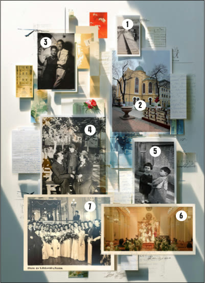
שער קדמי: 1. מסילת הרכבת בחרבין 2. בית הכנסת הישן בחרבין 3. אסתר ואלכסנדר לויטין 4. יוסי קליין והוריו שמואל וגולדה (אולה) 5. ילדה יהודיה וילדה סינית, חרבין 1922 (Sino-Israel Research & Study Center) 6. בית הכנסת הישן בחרבין — סצינה מתוך סדרת הטלוויזיה הסינית Never-Ending Summer 7. גסיה ויאשה טנדט מתחתנים בביהכ״נ הישן
תוכן הבולטין
מילה אישית מהיו״ר
לחברי וחברות איגוד יוצאי סין והמשפחות, שלום וברכהיקי (יעקב) מטלין, יו״ר איגוד יוצאי סין
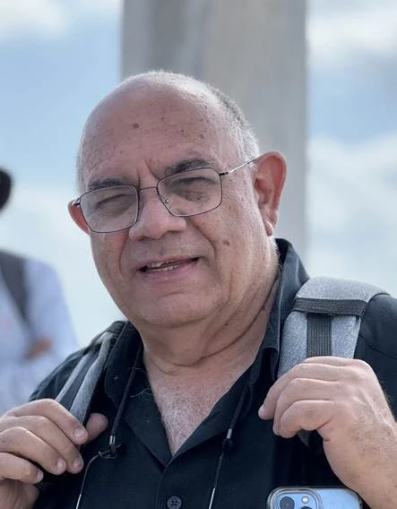
בכל שנה אנו מייחלים שלא נצטרך עוד להמתין לשקט ולימים טובים יותר. גם השנה, יותר מכל, אני מאחל שהשקט יגיע במהרה, יישאר איתנו ושתהיה שנה טובה!
בבולטין זה פתחנו מדור חדש אשר שמו: ׳מאחורי הפריים — תמונה אחת. 100 מילים. סיפור שנשאר׳. בו נעלה רגע נוסטלגי שיעלה חיוך על פנינו והתרגשות בליבנו. יש משהו מיוחד בסיפורים שנשארים איתנו לאורך השנים. הם מחברים אותנו אל השורשים שלנו, אל האנשים שעיצבו את דרכנו ואל החוויות הקטנות, שבחלוף הזמן הופכות לחלק ממי שאנחנו.
לכל אחת ואחד מאיתנו יש סיפור משפחתי שמלווה אותו, מסורת שעוברת מדור לדור, תמונה ישנה שמעלה חיוך, מאכל שמחזיר אותנו לילדות או סיפור שסופר שוב ושוב סביב השולחן המשפחתי.
לרגעים האלה יש כוח מיוחד. הם מחזירים אותנו הביתה, לאנשים היקרים לנו ולתחושת החום שמלווה אותנו גם כשהשנים חולפות. הם מזכירים לנו שלכל משפחה יש את הסיפורים שלה, את הצחוק, את המסורות ואת הזיכרונות שהופכים אותה לייחודית.
אני מזמין אתכם לשתף את הסיפורים האלה, שיעברו לדורות הבאים, כי הזיכרונות הטובים של אתמול הם המתנה שמלווה אותנו גם היום, ודרכם ובזכותם נמשיך יחד לשמור על הסיפור של יהדות סין.
שנה טובה! יקי (יעקב) מטליןיו״ר איגוד יוצאי סין
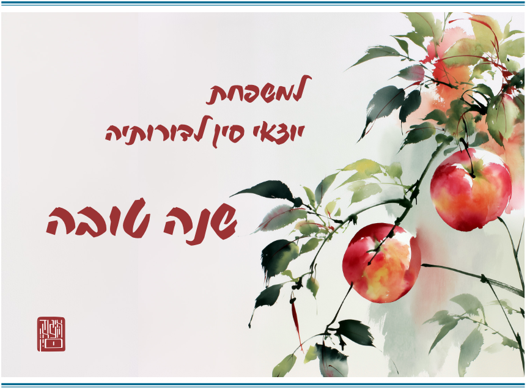
דבר שגריר סין בישראל
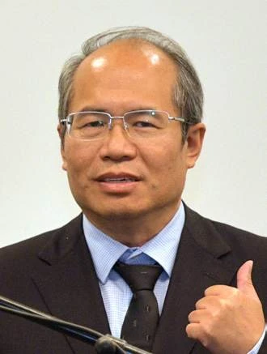
קוראות וקוראים יקרים,
אני מתכבד להיענות להזמנתכם לפרסם את דבריי בבולטין של האיגוד, ולנצל הזדמנות זו כדי לשלוח את ברכותיי החמות והכנות לכל חבריי באיגוד יוצאי סין.
במהלך מלחמת העם הסיני נגד התוקפנות היפנית ומלחמת העולם השנייה נגד הפשיזם, העם הסיני והעם היהודי חוו יחד תקופות קשות, חלקו את מצוקות המלחמה וניצבו זה לצד זה בשעות מבחן. בכך נכתב פרק בלתי נשכח בתולדות הידידות בין סין לעם היהודי.
הינכם שומרי מורשתה של היסטוריה משותפת זו וממשיכיה. הסיפורים המשפחתיים והזיכרונות היקרים שאתם נושאים עמכם, הם חוליות חשובות בחברות המתמשכת בין עמינו. הם משמרים את הרוח והחום של אותה היסטוריה משותפת ומעבירים אותם מדור לדור.
בשנה הבאה נחגוג 35 שנים לכינון היחסים הדיפלומטיים בין סין לישראל, וכן 10 שנים ליצירת השותפות המקיפה והחדשנית בין שתי המדינות. לאורך שלושה עשורים ומחצה המשיכו יחסי סין–ישראל להתפתח באופן יציב ובריא, חרף האתגרים השונים, והעמיקו שיתופי הפעולה המעשיים בין שתי המדינות במגוון רחב של תחומים. סין רואה תמיד את יחסיה עם ישראל בראייה אסטרטגית וארוכת טווח וממשיכה לפתח אותם.
שגרירות סין בישראל נכונה לפעול יחד עם איגוד יוצאי סין, להעמקת הקשרים בין שני העמים ולשמירה משותפת על הידידות המסורתית בין סין לישראל ובין העם הסיני לעם היהודי.
יחד נוכל להבטיח כי ידידות רבת שנים זו תוסיף לפרוח, תתחדש ותתחזק, ותמשיך להאיר באור של עידן חדש.
שְׂיָאוֹ ג׳ונג׳אנגשגריר סין בישראל
דבר שגריר ישראל בסין
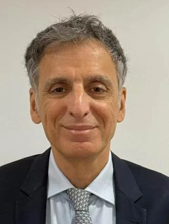
Da Jia Hao לכל הקוראים,
אני שמח מאוד על ההזדמנות לחלוק את מחשבותיי לגבי הקשרים בין ישראל לסין לקראת ה־35 שנה ליחסים שיחול ב־2027.
סין הינה מעצמת על תרבותית, חברתית, מדעית, כלכלית, פוליטית ועוד. מדינה ענקית עם היסטוריה של אלפי שנים. כשהמערב היה שקוע בחושך של ימי הביניים, סין כבר במאה ה־5 הכניסה מערכת של בחינות למשרות ממשלתיות, המציאה אבק שריפה, נייר ואפילו גלידה.
לאחר שנים רבות בהן סבלה ממלחמות, עוני והשפעות זרות, הצליחה להפוך לאחת האומות המובילות בזירה העולמית. כל המבקר בסין משתומם לנוכח הטכנולוגיות המתוחכמות מהן נהנים אזרחיה, הארכיטקטורה העירונית המרשימה בעלת גוון עתידני, התנופה התעשייתית המתקדמת.
ישראל, מדינה קטנה אך מעצמה בתחום החדשנות, יכולה לתרום רבות בתחומים הרלוונטיים למשק הסיני. למשל בנושא של AGING, נושא המסתמן כאחד האתגרים המרכזיים עמם מתמודדת סין, חינוך ובעיקר טיפוח מצוינות וכן התמודדות עם תלמידים בעלי צרכים מיוחדים, מו״פ חקלאי, ניהול משק המים ועוד.
קידום היחסים בין מדינות אינו רק עניין של ממשלות. הקשר בין העמים הוא הנדבך המרכזי המחבר בינינו ובהקשר זה איגוד יוצאי סין הינו אחד הגשרים בינינו לבין הממלכה המרכזית. ההיסטוריה שלכם הינה חלק משמעותי מהמורשת המשותפת של שני העמים ואנו בהחלט רואים את האיגוד כשותף במאמצינו לחזק את הקשרים עם המעצמה במזרח.
בשנה הבאה נציין 35 שנה ליחסים, ואנו מתכננים סדרת אירועים. אנו מזמינים גם את האיגוד וגם את חברי האיגוד כיחידים ליטול חלק באירועים אלה, לבוא לסין ולהכיר אותה טוב יותר. הקשרים בין האנשים הינם תמיד היסוד המרכזי ליחסים בין מדינות.
אלי בלוצרקובסקישגריר ישראל בסין
מה נשמע באיגוד?
הטור של אפרת מרגליתמזכ״לית איגוד יוצאי סין
עוד שנה לא פשוטה עברה על כולנו ואני פותחת את הטור השנתי שלי בברכה ותקווה לשנה טובה, שקטה, בטוחה, בריאה ושמחה לכולם, בארץ ובעולם. השנה, על אף הקשיים והמתח, המשכנו לעבוד, לתכנן ולחשוב ואלינו הצטרפו חברים נוספים, דור שני ושלישי לילידי סין, כדי לפתח, לתכנן ולהתקדם בעבודת האיגוד ובשימור המורשת. אז מה התחדש ומה בתכנית?
השנה התכנסנו לטקס הרמת כוסית לראש השנה תשפ״ו. בטקס השתתפו חברי האיגוד ונציגים משגרירות סין שהגיעו לשאת ברכה לשנה החדשה. תוכנן אירוע נוסף לפסח, ולצערנו, הוא לא התקיים, עקב המלחמה.
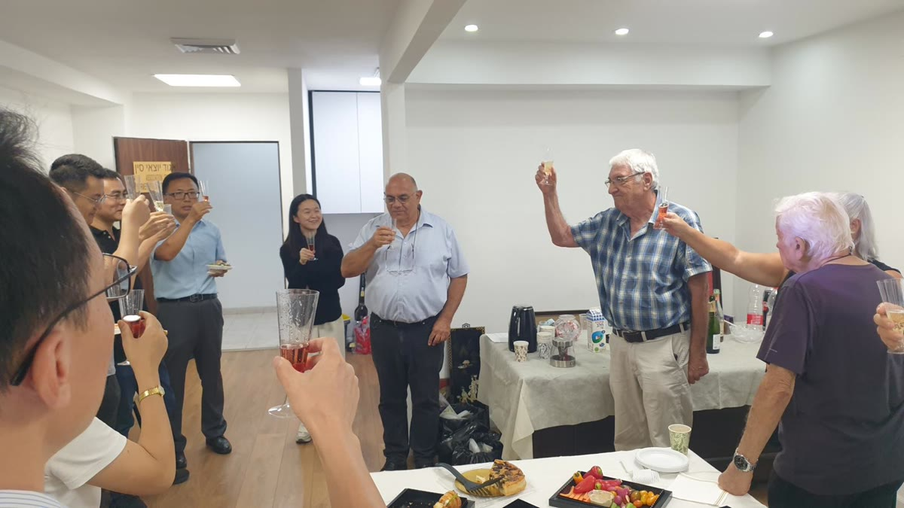
טקס הרמת כוסית לכבוד ראש השנה במשרד האיגוד
חלוקת מענק דו־שנתי לחיילים ולחיילות המשרתים בשירות סדיר, בראש השנה וביום העצמאות, הינה מסורת ארוכת שנים באיגוד. השנה, קיבלו כ־40 חיילים וחיילות, שהם כמובן צאצאים ישירים של יוצאי סין, מענק של 350 ₪ לכל חג.
שיעורי סינית התקיימו השנה במשך שני סמסטרים במשרד איגוד יוצאי סין ושילבו בתוכם לימודי קליגרפיה סינית. הקורס התקיים בשיתוף עם אגודת הידידות ישראל–סין. אנו מתכננים לפתוח כיתת מתחילים לצד המתקדמים אחרי החגים.
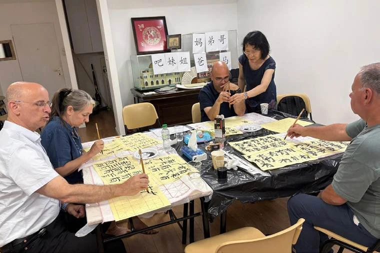
איך אומרים את זה בסינית? שיעורי סינית באיגוד
פרוייקט הסרט ״הסינים באים״ הגיע לסיומו. זהו סרט מקורי בהפקת האיגוד, המורכב מראיונות של ילידי סין והרבה תמונות, הסרט כולל כתוביות באנגלית. אירוע הקרנת הסרט מתוכנן לתחילת השנה הבאה.
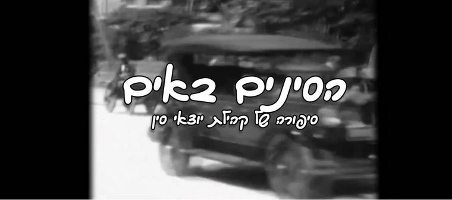
״הסינים באים״ — סרט בהפקת האיגוד
בדרך לטיול שורשים בסין. בנובמבר 2025 התקיימה נסיעה לסין, שבמסגרתה נערכו ביקורים באתרי הקהילות היהודיות בטיאנג׳ין, חרבין ושנגחאי, במטרה להכיר מקרוב את היעדים ולבחון אפשרויות לקראת טיול שורשים עתידי לחברי האיגוד.
במסגרת הביקור התקיימה פגישה עם שגריר ישראל בסין, אלי בלוצרקובסקי, ועם צוות השגרירות. במפגשים עלו נושאים הקשורים לשימור המורשת היהודית בסין, ואנו ממשיכים להיות עמם בקשר בנושא. נספחת התרבות של השגרירות הצטרפה אלינו לביקור בחרבין, ובשנגחאי נפגשנו עם הקונסולית הכללית.
הנסיעה אורגנה על ידי החברות הסיניות CCECC ו־CEAI. בעקבות הביקור נוצרו קשרים עם המארחים המקומיים, קשרים שנמשכים גם כיום, והם אף לוקחים חלק בפעילויות ובאירועים של האיגוד.
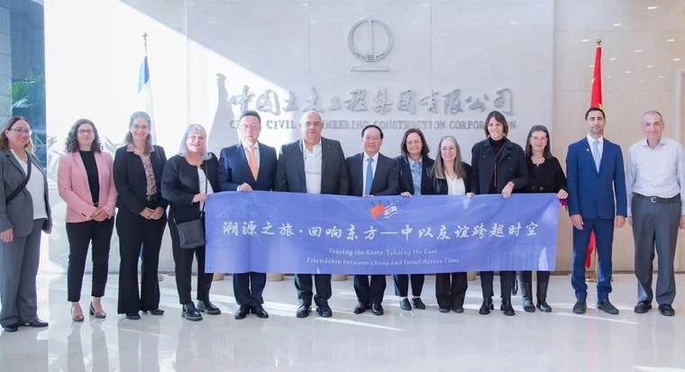
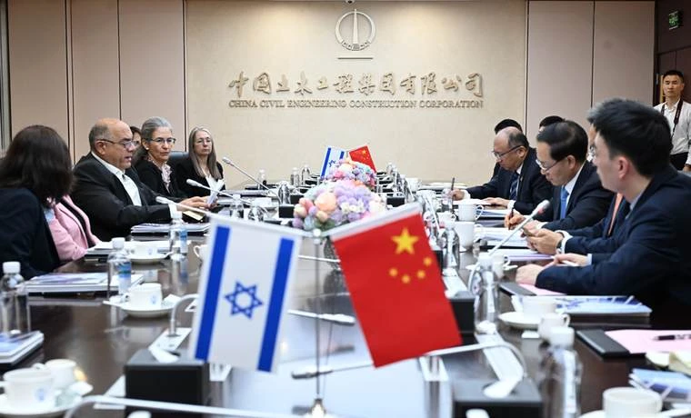
פגישה עם הנהלת CCECC, CEAI, חברי המשלחת ונציגים משגרירות ישראל
טקס הענקת מלגות לסטודנטים לשנת הלימודים תשפ״ו והמפגש השנתי של איגוד יוצאי סין התקיים בדצמבר 2025 במוזיאון ארץ ישראל. בטקס נכחו כ־200 מחברי האיגוד. שגריר סין בישראל, השגריר שְׂיָאוֹ ג׳ונג׳אנג, כיבד בנוכחותו בטקס, יחד עם דיפלומטים נוספים משגרירות סין.
התחלנו בסיור מודרך בתערוכת הצילומים ׳עדות מקומית׳, המשכנו לקבלת פנים עם כיבוד וצפינו בגרסה מקוצרת של הסרט ׳הסינים באים׳, שהופק ע״י האיגוד. כמובן שסיימנו בטקס חלוקת המלגות לסטודנטים צאצאי ילידי סין. חברים אשר תרמו מלגות לזכר או לכבוד בני משפחתם העניקו באופן אישי את המילגה לסטודנטים. הוענקה מלגה של 1,000 ₪ ל־65 סטודנטים וסטודנטיות. באירוע שמחנו לפגוש חברים שחידשו את הקשר עם האיגוד, יחד עם משפחותיהם.
ראש השנה הסיני בשגרירות — חברי איגוד יוצאי סין הוזמנו לאירוע לכבוד ראש השנה הסיני בשגרירות הסינית החדשה שנפתחה השנה בשכנות למשרד האיגוד ברמת החייל. נהנינו ממוזיקה סינית, מאוכל טעים וממפגשים מעניינים.
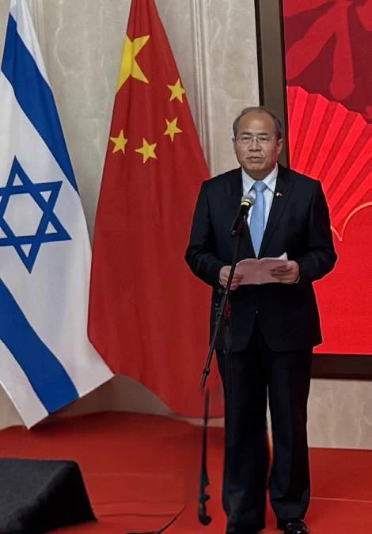
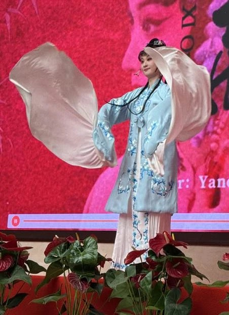
מסיבת ראש השנה הסיני בשגרירות סין. בתמונה העליונה: שְׂיָאוֹ ג׳ונג׳אנג, שגריר סין בישראל
יש לנו לוגו חדש! שמחים להציג באופן רשמי את הלוגו החדש והמרשים של איגוד יוצאי סין. הלוגו עוצב ע״י ענת פרידמן, שאביה, אריה שוחט, נולד בסין.
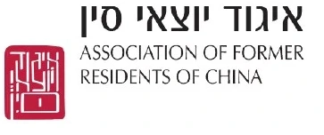
בלב הלוגו ניצבת חותמת סינית מסורתית, אדומה ובולטת, שבתוכה משולבות המילים ״איגוד יוצאי סין״. כמו חותם אישי, האותיות העבריות משתלבות במוטיב הסיני והופכות לחלק ממנו, מבלי לאבד את זהותן.
החותמת, ששימשה בסין לסמל של זהות, אישור ואותנטיות, מסמלת את חותם התרבות שסין הותירה בקהילה היהודית שחייתה בה. לצידה מופיעות אותיות בעברית ובאנגלית, המבטאות את החיבור בין התרבות הסינית לזהות הישראלית.
אתר האינטרנט של איגוד יוצאי סין נמצא בעיצומו. על כך התודה למיכל פרידמן, ביתה של ענת, דור שלישי לילידי סין, שיחד עם ענת פרידמן, מעצבות ומקימות את האתר.
כחלק מהעבודה על האתר ובמטרה להקל ולייעל את השירות לחברי האיגוד, עברנו מטפסים ידניים לתהליך הגשה דיגיטלי, תוך שימוש בכלים טכנולוגיים מתקדמים. הטפסים המקוונים מאפשרים להגיש בקשות למלגות ולמענקים בקלות, במהירות ובנוחות.
בית הכנסת של איגוד יוצאי סין — אנו מחפשים תורמים לשיפוץ בית הכנסת על מנת שישמש את האיגוד והחברים.
פגישה עם שיר גדעון, סגנית שגריר ישראל לסין — בחודש יולי נפגשנו (יו״ר האיגוד יקי מטלין ומזכ״לית האיגוד אפרת מרגלית) עם סגנית שגריר ישראל לסין, שהיתה בביקור בארץ, בבית הכנסת של איגוד יוצאי סין בתל אביב. שיר התעניינה מאוד בסיפור בית הכנסת ובהיסטוריה של יהדות סין בכלל.
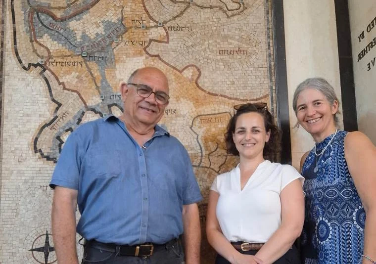
מימין: מזכ״לית האיגוד, אפרת מרגלית; שיר גדעון, סגנית שגריר ישראל בסין; ויו״ר איגוד יוצאי סין, יקי מטלין
ומשהו אישי ממני — היום קיבלתי תמונה של אמא שלי, כשהיתה בת 6 ואולי 7. התמונה העלתה בי סיפור ועוד סיפור, והחזירה לרגע עולם שלם שהיה ואיננו עוד, אך עדיין ממשיך להתקיים בזיכרונות, בסיפורים שאנחנו מספרים ומעבירים הלאה — וכך ממשיך להיות חלק מההווה.
וחשבתי על הבולטין שלנו ועל הסיפורים והתמונות שלכם, והסיפורים שנשמעו ונכתבו כאן במשך השנים וגם על מה שאתם תמשיכו להעביר הלאה לילדים ולנכדים ולעולם. אנחנו שמחים להמשיך יחד איתכם במסורת ולתת במה לסיפורים ולתמונות, לקולות ולזכרונות שלכם ושל משפחותיכם.
להצטרפות לאיגוד, לקבוצת הוואטסאפ, לרשימת התפוצה במיילים, לשאלות ורעיונות, אתם מוזמנים לפנות אלינו: igud@jewsofchina.org | 03-5171997
שנה טובה. אפרת מרגליתמזכ״לית איגוד יוצאי סין
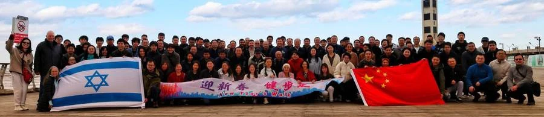
בינואר 2026, השתתפו נציגי איגוד יוצאי סין באירוע ההליכה המסורתי של שגרירות סין בישראל לכבוד ראש השנה הסיני, שהתקיים לאורך הירקון בתל אביב.
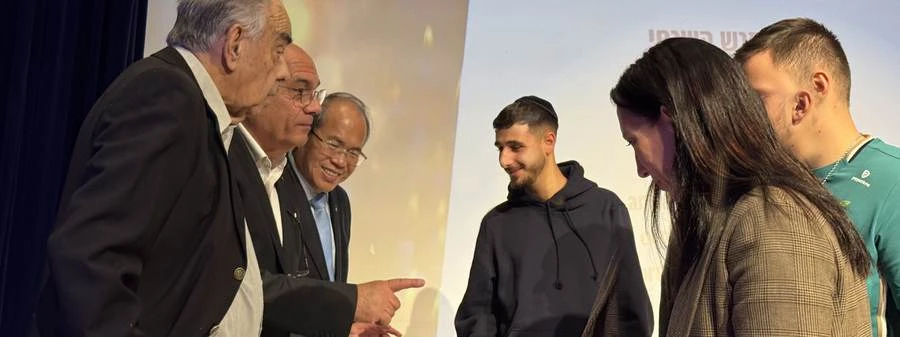
מנציחים באהבה
מעניקים עתיד
כמידי שנה, גם בשנה״ל תשפ״ז, יעניק איגוד יוצאי סין מילגות לימודים לבני משפחות יוצאי סין, כדי לעודד השכלה, להוקיר מצוינות ולחזק את הדור הבא של הקהילה.
אנו מזמינים אתכם לתרום מילגה על שם יקירכם, כהוקרה והנצחה
כתורמים, שמכם יופיע על תעודת המילגה שיקבלו הסטודנטים, ובמהלך הטקס, נציג המשפחה יעניק את המילגה באופן אישי — כמחווה של כבוד, זיכרון ותקווה. המשפחה התורמת תקבל תעודת הוקרה, ושם התרומה יופיע בבולטין ובאתר.
יש סיפורים משפחתיים שהם גם סיפורה של תקופה. סיפורה של משפחת קלורמן הוא אחד מהם. מהבריחה מפוגרומים באירופה ועד לבניית חיים מלאי תקווה ושגשוג בחרבין — המשפחה הייתה חלק מדור של יהודים שהפכו עיר צעירה בצפון סין לבית חם ולמרכז של עשייה, תרבות וקהילה.
אחרי מאות שנים של דיכוי, רדיפות ועוני ברוסיה, ארץ המולדת, היהודים שמצאו את דרכם לחרבין בתחילת המאה ה־20 היו סוף סוף חופשיים לשלוט בגורלם, להקים עסקים, לייסד מוסדות תרבותיים ודתיים, ולעזור בבניין עיר מבראשית. קרובי המשפחה שלי נצרו את החלק הזה בחווייתם מחרבין, והאירועים הטרגיים שעברו לקראת סוף שהותם לא הצליחו להשכיח את גאוותם על היותם ״יהודים מסין״.
סבתי, אתל (רוזה) קיליס קלורמן, הייתה בת חמש כשהגיעה לחרבין עם אחותה הצעירה נינה ועם אימן ההרה, ילנה קיליס. היה זה מיד לאחר הפוגרום הנורא באודסה בשנת 1905, אותו שרדו על ידי כך שהסתתרו במשך מספר ימים בעליית הגג בבניין בו גרו.
משהבינו שבטוח לצאת מהמחבוא, עלו על רכבת לאורכה של רוסיה עד הגעתן לחרבין, שם התאחדו עם אבי המשפחה, נחום, שהיגר קודם לכן למנצ׳וריה. ילנה הנסערת פחדה אפילו לרדת מהרכבת כדי לרכוש אוכל, ושלוש הנשים נאלצו לצלוח את המסע בן מספר השבועות באכילת סלמי יבש בלבד.
חרבין של שנת 1905 הייתה עיירת ספר. לא נדרשה ויזת כניסה, אבל לעיר גם לא היה הרבה מה להציע. רוזה נהגה לספר על הקרח שנוצר על קירות הבתים הדקיקים. ובכל זאת, משפחתם המשיכה לצמוח ומנתה שמונה ילדים. חרבין התפתחה לכדי עיר מצליחה, והקצבייה של נחום שגשגה.
שנות הזהב של המשפחה
בתום לימודיה בבית הספר היסודי בחרבין, רוזה נשלחה ללמוד ב־Institut de St. Joseph, פנימייה קתולית יוקרתית בשנחאי, שם למדה אנגלית וצרפתית. בקרב התלמידות נכללו מספר בנות יהודיות נוספות שהוריהן היו אמידים מספיק כדי לממן לבנותיהן חינוך ברמה הגבוהה ביותר.
בשנת 1906 לערך, סבי יצחק (איסקו חיים גרשביץ׳) קלורמן הגיע מאורינין, עיירה במחוז קמנץ־פודולסק, כיום באוקראינה. אביו, תלמיד תורה מסור, לא עבד למחייתו ולכן נאלץ יצחק לפרנס את המשפחה כבר מגיל 10. כשהיה בן 15, התחמק מתפקיד שולייה בחנות אופניים וברח לחרבין כשבידו רובל בודד ו־50 קופייקות.
בחרבין החל יצחק לעבוד כפועל ולאחר מכן כקצב ויזם. בתקופת מלחמת העולם הראשונה עזב את חרבין כדי להתחמק מגיוס לצבא הרוסי, ועבד בניו יורק כמנקה חלונות. הוא חסך את כספו וקנה שיירי חומרי בניין אותם שלח לסין, שם תכנן למכור אותם בתום המלחמה.
בשובו לחרבין, בשעה ששקל חומרי בניין בעזרת המאזניים בקצבייה של קיליס, פגש את רוזה בת ה־17. הוא היה מבוגר ממנה בעשור והשכלתו הרשמית הייתה מועטה, ובכל זאת משפחתה של רוזה עודדה את הנערה להיענות להצעת הנישואין של יצחק האמיד.
אבי, רוּבים יצחק (בהמשך שינה את שמו לצ׳ארלס יצחק) נולד לרוזה ויצחק באוקטובר 1918. אחותו צביה (סילביה) נולדה ב־1921, ואחיו ישראל (איזרה או איזריק, שונה מאוחר יותר לג׳וני) נולד ב־1928. משפחת קלורמן כבר הייתה עשירה בתקופה זו, וחגיגת הולדתו נמשכה שלושה ימים.
יצחק התמסר לעסקיו ובסופו של דבר הקים בית עסק לממכר עץ לבניין, ומשק בקר. הוא גם בנה כמה בנייני דירות בחרבין ורכש אורווה של סוסי מירוץ שהיו לו לגאווה גדולה.
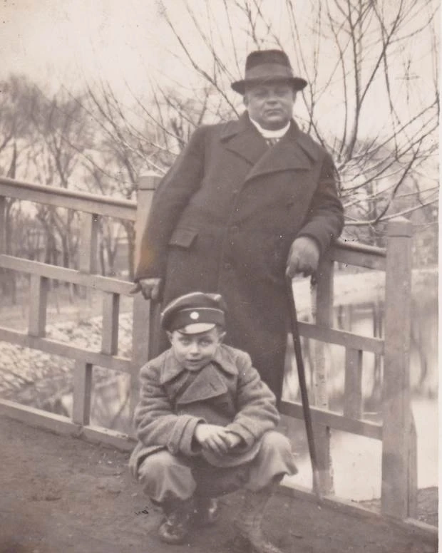
איסק גריגורי קלורמן ובנו ישראל קלורמן, בפארק בחרבין, אפריל 1937
הקלורמנים גרו ברחוב מספר שתיים בבניין מהודר שיצחק תכנן ובנה. בשש הדירות הותקנו כל חידושי השעה, כולל שירותים פנימיים, דבר שכמעט ולא נראה בחרבין באותם ימים. בנוסף לסוסי המירוץ, למשפחה היה סוס וכרכרה, שכן רחובותיה הבוציים של חרבין באותן שנים לא התאימו למכוניות.
רוזה נהגה להתהדר בפרוות ותכשיטים ולקנות בחנויות היוקרתיות ביותר בחרבין. היא אהבה ללכת לקונצרטים ואופרטות. בבית פיקחה על המשרתים שהכינו מטעמים רוסיים ויהודיים, אבל את המאפים אהבה להכין בעצמה.
הילדים למדו בבתי הספר הרוסיים המצוינים של חרבין, שם זכו להשכלה בכל התחומים, משירה ועד מתמטיקה מתקדמת. לסילביה הייתה מורה פרטית לפסנתר, ולבנים היו מורים פרטיים לקראת עלייתם לתורה בבית הכנסת החדש, אחד משני בתי הכנסת של חרבין. כמו רוב התלמידים היהודים בחרבין, שלושת הילדים עסקו בספורט, התעמלות ופעילויות חברתיות בחסות בית״ר, תנועת הנוער הציונית. (אחד מהמדריכים הבכירים בבית״ר היה מרדכי אולמרט, אביו של אהוד אולמרט.)
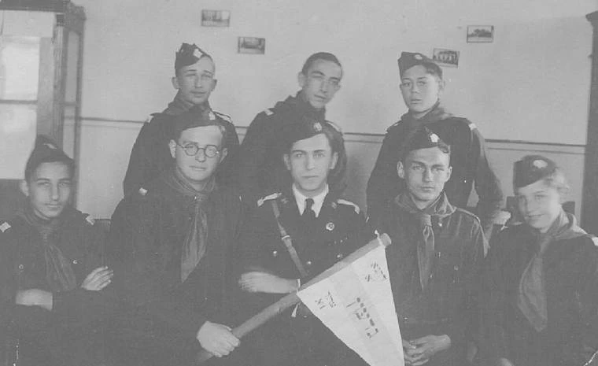
רוּבים (צ׳ארלס) קלורמן (שני מימין מקדימה), שבט גדעון של צופי בית״ר, 1930
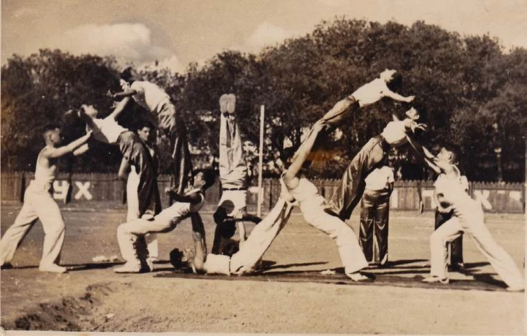
נבחרת ההתעמלות של צופי בית״ר חרבין, שנות ה־40
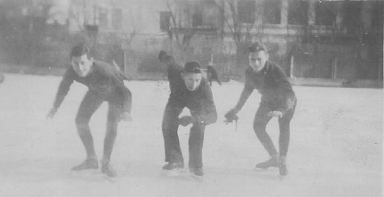
מחליקים על נהר סונגרי (סונגחואה) הקפוא. מימין: רוּבים (צ׳ארלס) קלורמן
עננים מעל חרבין
למרות הרווחה וההנאות, החיים בחרבין הלכו והתקדרו. רוסים לבנים שברחו מהמהפכה הבולשביקית הביאו איתם אנטישמיות שהתבטאה בדרכים רבות. אבי וחבריו היהודים נקלעו לקטטות בכל בוקר בדרכם לבית הספר, ויצחק השתמש מדי פעם באגרופיו אל מול בריונים רוסיים שתקפו עוברי אורח יהודיים.
ב־1931 הופיעו הכוחות היפניים והפכו את חרבין למרכז מפעלם לכיבוש מנצ׳וריה. אנשי עסקים יהודים נהיו למטרות, גם של הצבא היפני וגם של שודדים סיניים שחברו לבריונים רוסיים אנטישמיים. בני האוכלוסייה הזרה בעיר חיו בפחד, במיוחד אחרי האירוע המצמרר בשנת 1933 בו נחטף, עונה, ולבסוף נרצח הפסנתרן היהודי שמעון קספה, בנו של בעל מלון מודרן היוקרתי בעיר.
ב־1936, הקלורמנים עברו לדירה בקומה העליונה של בניין דירות בן שלוש קומות שיצחק בנה ברחוב יאמסקיה. צוותי כיבוש יפניים שכרו את שתי הקומות האחרות.
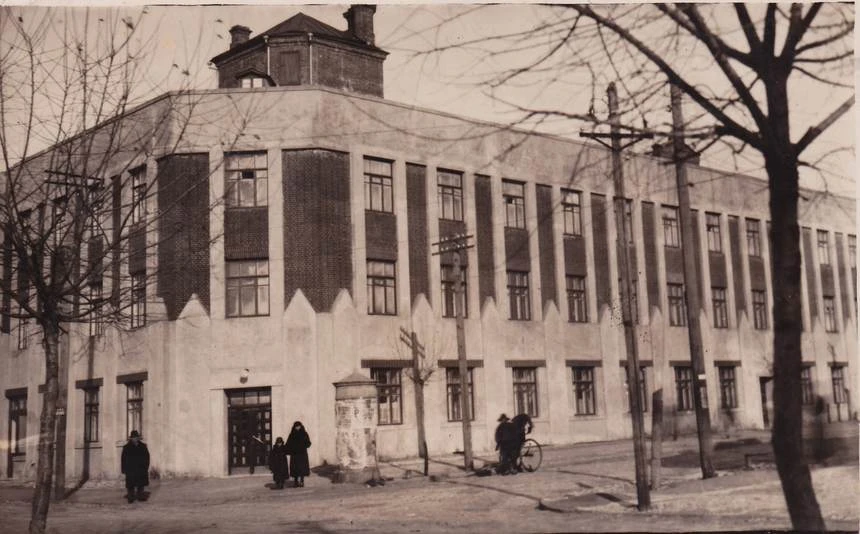
איסק גריגורי קלורמן מול בניין הדירות החדש שלו ברחוב יאמסקאיה 83 (כיום דאאן) בשנת 1936. הבניין כבר אינו קיים היום.
לאור חוסר הוודאות המשתולל, המשפחה החליטה לשלוח את אבי לאוניברסיטת קליפורניה בברקלי כדי להתבסס בארה״ב, למקרה ששאר המשפחה תצטרך לעזוב את סין. לאחר סיום לימודיו בבית הספר התיכון המסחרי הראשון של חרבין, בו למדו בשפה רוסית, אבי למד במשך שנה בבית ספר תיכון בריטי בטינזין (היום: טיאנג׳ין) כדי שיוכל ללמוד קצת אנגלית לפני שיפליג.
חיים חדשים מעבר לים
במאי 1938, זמן קצר לאחר שאבי הגיע לסן פרנסיסקו, יצחק נחטף על ידי הקמפייטאי, המשטרה החשאית היפנית, בדרכו לעבודה, מרחק רחובות ספורים מבניין הדירות ביאמסקיה. איש מעולם לא ראה אותו שוב. הניחו שהוא עונה למוות ונקבר בקבר אחים, יחד עם אינספור קורבנות סיניים וזרים אחרים. יצחק התנגד לניסיונות היפניים להשתלט על נכסי המשפחה, אבל עכשיו הרכוש שלהם הוחרם, והקלורמנים התמוטטו כלכלית.
לאחר מלחמת העולם השנייה, עם השינויים הפוליטיים בסין, עבר בניין הדירות ברחוב יאמסקיה לבעלות השלטונות. הבניין נותר על תילו עד שנות ה־80, אז נהרס.
כולם פחדו שאבי יפגוש באותו גורל כמו יצחק אם יחזור לסין. בהיותו חסר אמצעים למימון שכר לימוד ומתוך דאגה לרווחת משפחתו, אבי מעולם לא התחיל את לימודיו בקולג׳. במקום זה הוא עבד בעבודות מזדמנות וחסך את כספו עד שהוא וחברו מחרבין, מארק רוס, הצליחו לקנות את חנות המכולת No-D-Lay ברובע מיֵשֵן בסן פרנסיסקו. מארק ואבי גרו עם הוריו של מארק, נדז׳דה איסקובנה ומארק איליץ׳ טרוצקי. מארק איליץ׳ היה מזכיר אגודת הקהילה היהודית בחרבין.
כשארה״ב הצטרפה למלחמה ב־1941, אבי התגייס לצבא ארה״ב. הוא שינה את שמו לצ׳ארלס יצחק קלורמן ונודע בשם ״צ׳ארלי״ למשך שארית חייו. בסופו של דבר הוא התנדב ל־Merrill's Marauders, יחידה שביצעה משימות מאחורי קווי האויב בג׳ונגלים של בורמה. כיוון שגדל עם סוסים, מונה צ׳ארלי לנפח בחיל הפרדות של הצבא. הוא נעזר בידע הבסיסי שלו בשפה הסינית וביכולתו להבחין בין בעלי ברית סיניים לאויבים יפניים כדי לשמש כמתורגמן לעת צורך.
בחרבין, רוזה נישאה בשנית, אבל הנישואין היו קצרי מועד. ב־1942 עזבו רוזה, ג׳וני וסילביה את חרבין ועברו לשנגחאי, שכבר הייתה עמוסה באלפי פליטים יהודיים מאירופה. סילביה ניגנה בפסנתר במועדון לילה כדי להרוויח כסף. ג׳וני טיפל בסוסים שבעלי ברית בריטיים ואמריקניים שנכלאו הותירו מאחור, וכן בסוסים שהיו בבעלות הפרשים היפניים.
בשנת 1945 השתחרר צ׳ארלי מהשירות הצבאי ונסע לחגוג את חג ההודיה בסן פרנסיסקו, בבית דודיו, נתן קלורמן (אחיו של יצחק) ואשתו, ראי. שניהם גרו בחרבין לפני המלחמה, ושם גם נולד בנם הארי.
באותו חג הודיה הכיר צ׳ארלי את מרים גרנט, שבאה עם אמה שרה (סוניה) גרנט (לשעבר גרודסקי). הגרנטים היו יהודים רוסיים מניקולסק אוסיריסק ליד ולדיווסטוק. הם הגיעו לחרבין כדי להימלט מהמהפכה הבולשביקית, וחיו שם שנים ספורות כשמרים הייתה פעוטה.
מרים וצ׳ארלי נישאו בסן פרנסיסקו חודשיים מאוחר יותר, בינואר 1946. בעזרת הצלב האדום הצליח צ׳ארלי סוף כל סוף ליצור קשר עם משפחתו בסין. הוא הצליח להביא את אימו ואחיו לסן פרנסיסקו משנגחאי זמן קצר לפני שנולדתי במרץ 1947. אחי גרג נולד ב־1948.
סילביה, אחותו של צ׳ארלי, עלתה לישראל משנחאי ב־1949. כמו חלוצים ישראליים רבים, היא התגוררה זמן מה באוהל ונאלצה להוביל מים. סילביה פגשה ונישאה לישראלי יליד גרמניה, היינץ אפשטיין, ולזוג נולדה בת בשם נורית. בשנות ה־60 וה־70, סילביה השתמשה בכישורי המזכירות שלה ובשליטתה בשפה הרוסית והאנגלית, ובמשך 10 שנים עבדה בסניף תל אביב של איגוד יוצאי סין. היא גם עבדה בויצ״ו, ארגון הנשים הציוני הבינלאומי. סילביה נפטרה בראשון לציון ב־1988.
ב־1951, צ׳ארלי לקח את אמי, אחי ואותי לפיליפינים, שם פתח סניף של חברת המסחר ״שרירו״. משפחת שרירו ייסדה את חברת המסחר הבינלאומית שלה בחרבין ב־1906, והקלורמנים הכירו אותם משם.
צ׳ארלי עזב את חברת שרירו והקים חברה לייצור מזון. בנוסף, ייסד בדרום הפיליפינים פרוייקט בתחום הבקר, בהשראת עסקי הבקר של אביו בחרבין. בשנות ה־60 חזרו הוריי לסן פרנסיסקו ומשם עברו לרינו, נבדה, בסמוך לחוות הבקר שלהם.
רוזה נפטרה ברינו ב־1994, וצ׳ארלי ב־2001. ■
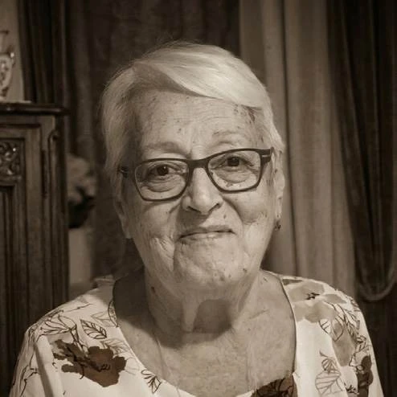
לזכרה
בצער רב ובלב כואב אנו מודיעים על פטירתה של
לאה (לילי) קורושי קרוגליאק ז״ל
ילידת טיינג׳ין, סין
1932 – 2026
לאה הייתה אם, סבתא, סבתא־רבתא ואחות אהובה.
הותירה אחריה את בנותיה, אידה ומירה, נכדים ונינים, אחותה רחל מוסקוביץ׳, אחיה צביקה קרוגליאק, וכל בני משפחותיהם.
יהי זכרה ברוך
רופא וג׳נטלמן
להקיף את העולם 3 פעמיםהמסע של ד״ר לנצ׳יצקי
מאת: אורית כנען
המסע של ד״ר יעקב ישה לנצ׳יצקי נשמע כמו תסריט הוליוודי: סבא שנחטף לצבא הצאר וגורש לסיביר, בריחה ברכבת הטרנס־סיבירית, לימודים בארה״ב ובאירופה, ומפגשים בלתי נתפסים, עם נכדו של טולסטוי ועם האצולה הסינית. אחרי שהקיף את העולם שלוש פעמים, הלב של הרופא מטיינג׳ין פעם בכיוון אחד — אל ארץ ישראל. אורית כנען משרטטת את דיוקנו של אביה: הרפתקן, ג׳נטלמן ורופא בכל רמ״ח איבריו.
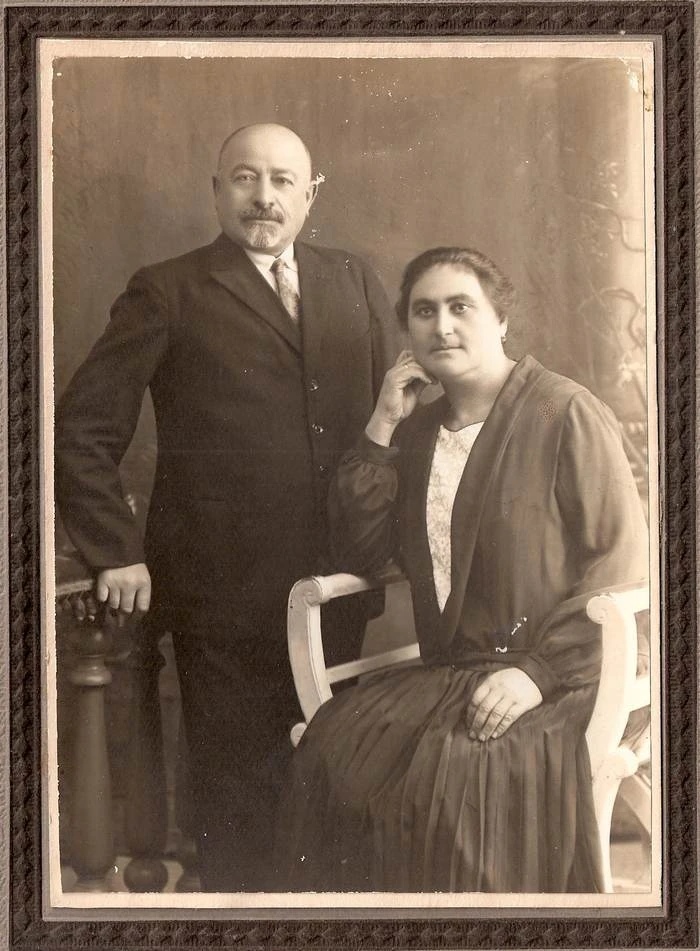
ברכה דרכלר דורון וזלמן זאמה לנצ׳יצקי, 1927
ד״ר יעקב ישה לנצ׳יצקי עלה לישראל יחד עם אמו ברכה דרכלר דורון ואחותו סוסיה, בנובמבר 1950, באונייה ״אנה סאלן״. הם לא הורשו לעבור בתעלת סואץ, לכן נסעו דרך האוקיינוס השקט, עברו בתעלת פנמה, חצו את האוקיינוס האטלנטי עד לאיטליה ומשם באונייה ״נגבה״ לחוף חיפה בא״י.
סבו מצד אימו, דרכלר דורון, היה מילדי ״החטופים״ ברוסיה (״הקנטוניסטים״ — ילדים שנלקחו על ידי הרשויות ברוסיה של המאה ה־19, חונכו במסגרת צבאית עד שהגיעו לבגרות וגויסו לצבא). הוא נלקח מהוריו בהיותו ילד בן חמש או שש, בשנת 1840, ובדרך נס זכר את שמו ומקום הולדתו. לאחר עשרים וחמש שנה בשירות ה״צאר״ בצבא הרוסי חזר לבית הוריו. הוא נהיה ״מהפכן״ והתנגד לשלטון הצאר יחד עם חבריו. הם תקפו את נציג הצאר שהגיע לעירם וכולם נידונו למוות. אך לבסוף, עונשו הוחלף לגירוש לסיביר לכל ימי חייו ומאסר עולם, כי שירת את צבא הצאר. כך צעד קשור ברגליו ובידיו לחברו, במשך שנתיים לסיביר, כאשר חלק מהדרך עשו ברכבת. כעבור שנתיים הצטרפה אליו אשתו ושני ילדיו. בסיביר נולדו להם עוד בנות נוספות, ואחת מהן היא אמו של ישה, ברכה. המשפחה גרה ליד אירקוצק בכפר רוטינה והייתה המשפחה היהודית היחידה במקום.
אביו של ישה, זלמן זאמה לנצ׳יצקי, נולד בלובלין שבפולין. במגיפת כולרה שפרצה נפטרו הוריו תוך שלושה ימים. סנדלר עני אימץ אותו ואת אחותו מרים בהיותם ילדים קטנים. (היה להם קשר עד מלחמת העולם השנייה בה ניספו.) השם לנצ׳יצקי ניתן להם כ׳יהודי חסות׳ מטעם הפריץ. אביו של ישה גויס לצבא והגיע עם הצבא הרוסי לסיביר ושם נישא לברכה. האב עסק במסחר בפרוות, היה חייט וייצר מברשות.
ישה נולד ב־1906 ואחר שנתיים נולדה אחותו סוסיה. כשנולדה הלך האב לצורף באירקוצק וביקש לקנות לבתו מזכרת. המוכר אמר לו שהבוקר נוסע ברכבת הטרנס־סיבירית ומכר לו תכשיט זהב של ״עשרת הדיברות״. בהיותו בן שש, בשנת 1913, נדדה המשפחה לחרבין ברכבת הטרנס־סיבירית.
ב־1913 היו בחרבין 5,032 יהודים, 11.5% מכלל האוכלוסייה הרוסית. כולם היו אזרחי האימפריה הרוסית.
סטודנט ללא גבולות
בגימנסיה הרוסית סיים את לימודיו. בסיימו חפץ לנסוע לרוסיה כי אהד את הקומוניזם; אביו שכנע אותו לנסוע ללמוד הנדסת מכרות בברקלי בארה״ב. ב־1.9.1923 הם יצאו לנסיעה דרך יפן והתעכבו בעיר יוקוהמה, נכנסו לבנק ואז אירעה רעידת אדמה עוצמתית בעוצמה של 7.9 בסולם ריכטר, בה ניספו יותר מ־142 אלף איש. הכל סביבם נחרב, הם צעדו לים ובדרכם פערה האדמה את פיה. לאחר שלושה ימים נרגעה רעידת האדמה. אמו ואחותו קראו בעיתון על הרעש וחשבו שהם נהרגו, אך כעבור מספר ימים הגיעה טלגרמה וכל באי הבית השיקו כוסות יין.
ישה למד הנדסה במשך שנה והגיע לתובנה כי הוא צריך לטפל באנשים. הוא חזר לסין ונסע משם לאיטליה ללמוד רפואה בפביאה ואח״כ בבולוניה. לאחר שבע שנים הוא סיים את לימודי הרפואה וקיבל רשיון לעסוק במקצוע כרופא כירורג.
הוא נסע לוינה, שם עבד והשתלם בפקולטה לרפואה באוניברסיטת וינה עד אוקטובר 1931. משם נסע לפריז ולמד בפקולטה לרפואה באוניברסיטת פריז עד 1931.
רופא בעולם הגדול
בשנת 1932, תקופה בה רוחות הפשיזם התחזקו, החליט לנסוע לבקר את הוריו. בדרכו עבר בפורט סעיד והחליט לראות את פלשתינה. הקונסול הבריטי נתן לו ויזה, אך כשעמד לצאת שאל אותו: ״אולי אתה במקרה יהודי?״ וכשהשיב ״כן״, נלקחה ממנו הויזה.
הוא חזר לסין לעיר ״טיינג׳ין״ וגר ברובע האנגלי, בו היו מועדונים ופארקים יפים. תמיד סיפר על החיים התרבותיים, על הפגישות במועדון, על חברים רבים ביניהם שגריר אוסטרליה בסין (שהציע לו לימים להגר לאוסטרליה ולא למדינת ישראל).
בטיינג׳ין פתח מרפאה, היה נשוי 16 שנה, ללא ילדים. בשנת 1933 נפטר בטיינג׳ין אביו זלמן זאמה לנצ׳יצקי.
מבין הסיפורים הרבים מאותה תקופה, שניים נחרטו בזיכרון במיוחד: בעיר פרצה מגיפת כולרה קשה כתוצאה משיטפונות ועליית מי הנהר על גדותיו. על מגיפה זו שמעתי בילדותי וראיתי את התמונה של אבי מטפל בחולים ברחוב באלונקות. בכינוס הדלקת נר חנוכה בשנת 2010 שמעתי עדות מפי אחד המשתתפים שסיפר לי שאמו ואחותו של אבי גרו בקומה נמוכה שהוצפה ומשפחתו אירחה אותם בביתם הגבוה יותר. יום אחד הגיע אבי על רפסודה. לשאלתי ״אתה בטוח?״ השיב ״כן!״ אבי בדק אותם, ולשאלה מה ניתן לעשות כדי לא להידבק במגיפה השיב: תאכל כל יום ראש שום! מאז אני אוהב שום וכל משפחתי ניצלה.
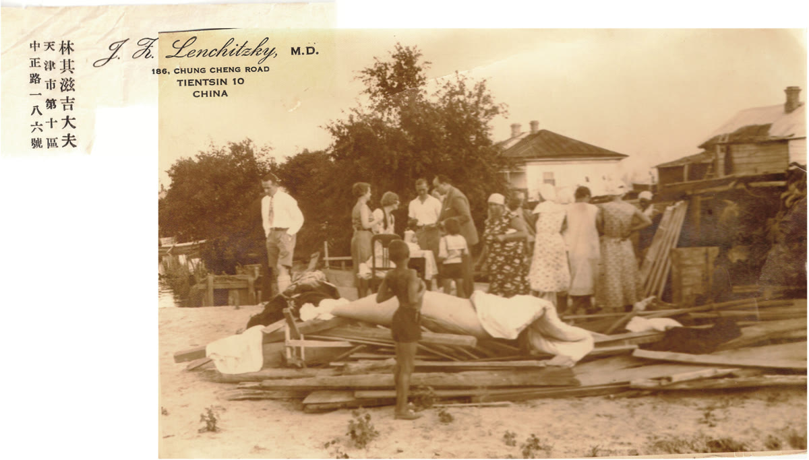
ד״ר לנצ׳יצקי (לבוש חליפה במרכז התמונה) מטפל בחולים במגיפת הכולרה
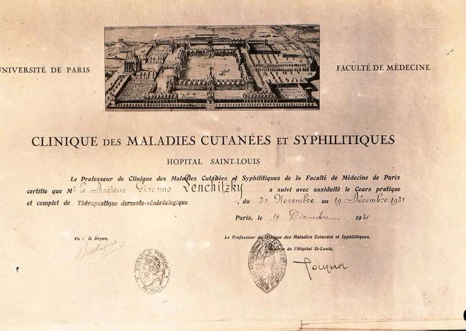
תעודת לימודים רשמית של הפקולטה לרפואה של אוניברסיטת פריז, 1931
לאחר תקופת עבודה מאומצת החליט לנסוע לטיבט, מצויד בתיק רופא ותרופות טיפל בחולים. ביקש להתקבל אצל הדלאי לאמה, שוחח איתו והתרשם מאוד מאישיותו. יום אחד פגש באיש לבן, סבר כי עליו לבוא עמו בדברים בשפה האנגלית. מיד התברר לו שהאיש דובר רוסית — היה זה נכדו של לב טולסטוי. אחת מבנותיו של טולסטוי הגיעה לארה״ב ובנה היה כתב של עיתון אמריקאי והגיע לטיבט. שעות רבות בילו הם בשיחות ארוכות.
כשנוסדה מדינת ישראל הוא הלך כמו כל היהודים לבית הכנסת. כשעלו הקומוניסטים לשלטון בסין עזב את סין והפליג ארצה שלושה חודשים. באונייה ערך בריתות, ניתח וטיפל באנשים. לשאלת אמי ״למה באת לארץ?״ השיב: ״אני באתי לארץ, אני שהייתי זר ורחוק מהיהדות, שלא ידעתי מהי צורת ׳אלף׳ בעברית, שלא קיבלתי חינוך יהודי, לפתע כשהייתי צריך לקום ולעזוב את סין דפק ליבי בקרבי: סע עם כל היהודים לארץ ישראל. אם זה קרה לי, זה יקרה לעוד הרבה יהודים שרחוקים מהיהדות, לפתע ידפוק ליבם ויטה אותם לארץ. מפני זה אני מאמין בנצחיות של עם ישראל בארצו״.
ד״ר יעקב ישה לנצ׳יצקי בא בתור רופא מחליף לנהלל אחרי שסבב את העולם הגדול שלוש פעמים. הוא הגיע בסוף לעיגול הקטן; הוא בא מעולם זר ורחוק.
בשנת 1951 נשא לאישה את עדינה לוין ועבר לגור בנהלל. ב־1952 נולדה להם בת, אורית. היו אלו ימי הצנע; חברו הטוב מסין, ליפשיץ, שהיגר לארה״ב, היה שולח לתינוקת צנצנות גרבר.
אהב מאוד את מקצוע הרפואה והיה אומר ״המקצוע הכי אנושי״ — לרפא בני אדם ולהצילם, להקל על מכאובם ותמיד להילחם נגד המוות. ד״ר לנצ׳יצקי עבד במעברות בעפולה, כפר ברוך ובנהלל.
בהספד שכתב עליו דוד גולן: ״זכורים לי ימי המתיחות של ערב מלחמת ששת הימים. בעמל ללא לאות התקין בית חולים ארעי במקלט. גאה היה עליו, ובלא מעט גאווה של רופא ואדם סיפר שאף ניתוחים לא מסובכים יהיה בכוחו לבצע שם ובלבד שלא יזדקקו לכך״.
לפני שנים מספר נתבקשתי ע״י מנהלת ארכיון נהלל לשלוח לה תמונה של אבי בתור רופא, כי יש לה רק תמונה שלו בחולצה לבנה ועניבה. השבתי לה: ככה הוא הלך למרפאה.
הוא היה אדם מלומד, רחב אופקים, מוכשר, אוהב שירה, בעל אופי סוער, בקיא בהרבה נושאים, יודע שבע שפות, קוצב חרוזים בשפת נעוריו.
ב־19.10.1968 נפטר ונקבר בנהלל. ■
בהוקרה
בהוקרה והערכה על תרומתכם הנדיבה
ישראל
אילנה וגיורא לסק לזכר אלה ושלמה לסק ז״ל ומרים ודניאל ברקוביץ ז״ל
7,000 ₪
מרים יקיר ואריה טנדט לזכר ליקה (לאה) ומילה (שמואל) טנדט ז״ל
1,500 ₪
רמה שלמוני (רוזן) לזכר ערן ונורית רוזן ז״ל
1,000 ₪
משפ׳ מקוב, ברכה, קדר לזכר דינה טריגובוב־קדר ז״ל
2,000 ₪
יהודית מרום וינון פרי לזכר רחל (רייצ׳ל) ויצחק (ייסאי) פרסוב ז״ל
דרור טריגובוב לכבוד אביו משה טריגובוב שייבדל לחיים ארוכים
1,000 ₪
ישראל קרני — מענק לחיילים לזכר רות קרני ז״ל
350 ₪
אידה שמואלזון לזכר לאה (לילי) קורושי קרוגליאק ז״ל
200 ₪
סין
תרומת השגרירות הסינית בישראל
52,000 ₪
ארה״ב
תרומת קרן פרנק ואת׳ל דון
19,236 USD
בריטניה
ירושת אלכס יוליוס פיימן
18,564 GBP
אוסטרליה
ירושת לוסי רייהיל
77,485 AUD
סיפורה של טנייה שליפר
לב פתוח, ידיים יוצרות
מאת: אורלי שליפר וגליה פרדו, בנותיה של טנייה
טנייה שליפר הייתה אישה רבת כישרונות, ציונית בנשמתה, יוצרת ואשת משפחה מסורה. זהו סיפורה של ילדה שובבה שהפכה לאישה מעוררת השראה. טנייה (מטלין) שליפר, 28.2.1934 – 23.12.2025. יהי זכרה ברוך
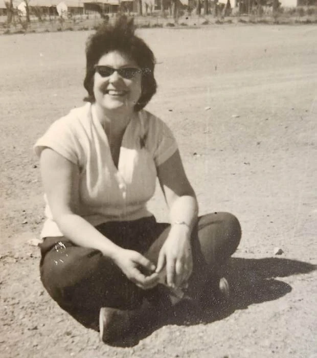
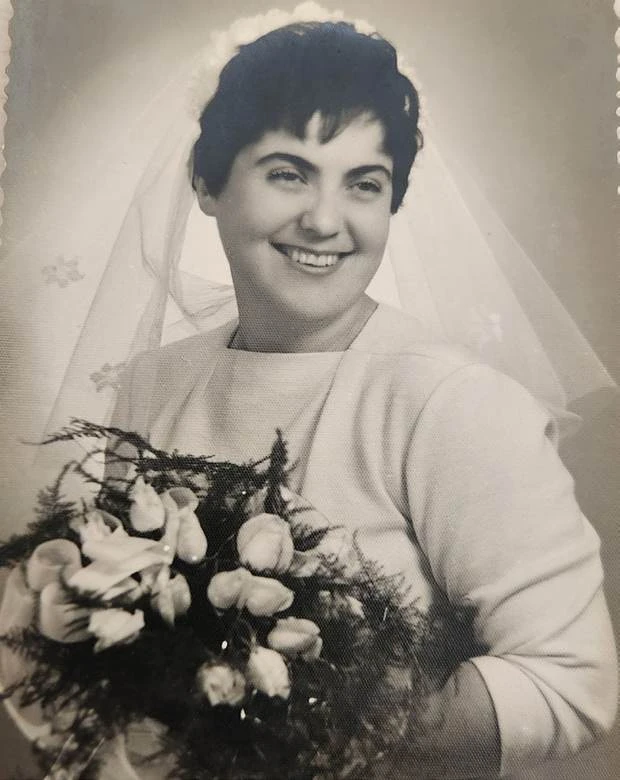
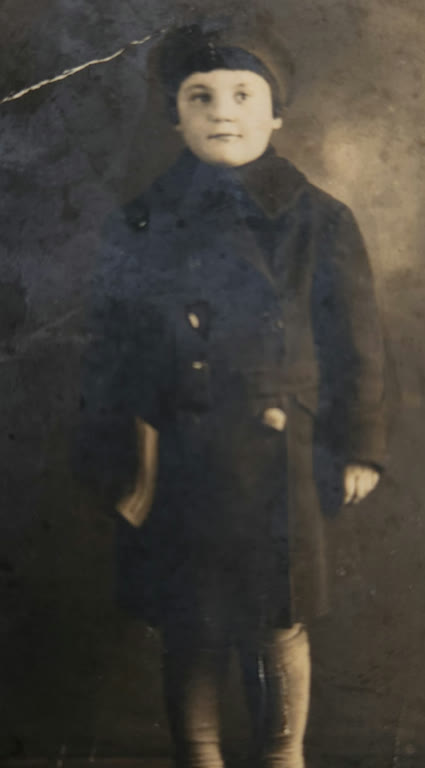
טנייה שליפר — קצרה היריעה מלספר קורותיה. נולדה בחרבין וגדלה כבת יחידה לרוזה וגרישה מטלין. הייתה ילדה מלאת חיים, שובבה ויצירתית אך גם נדרשה להתנהג כ״יאה״ לילדה יהודיה. לפני אחד החגים נרכשו וילונות חדשים לביתם, עליהם פרחים גדולים וצבעוניים. טנייה היתה בת ארבע או חמש, רצתה לשמח את אמה ולתת לה מתנה מפית יפה. נטלה מספריים וגזרה מהווילון את הפרח הכי יפה — מיותר לציין ששמחה לא היתה התגובה המצופה.
במלחמת העולם השנייה בעת הכיבוש היפני התייתמה מאביה. הבית היה מסורתי וציוני, בו שמרו כשרות וצוינו חגי ישראל. כילדה צעירה למדה בתלמוד תורה ואח״כ בבית ספר ״הורוד״ הרוסי. הייתה חברה בתנועת בית״ר.
בבית הספר בו למדה נדרשו התלמידים במפקד הבוקר, בנוסף לכל הברכות ופיקוחו של חייל יפני, להוסיף קידה וברכה לכיוון יפן (מזרח) לכבודו של קיסר יפן הירוהיטו. המורים היהודים ״הכשירו״ את הגזרה באמרם לילדים שזה לכיוון ארץ ישראל וירושלים.
בדרך אל החלום
בגיל 15 דאגה בעצמה לכל האישורים וסידורי עליה לה ולאימה. בקיץ 1950, לאחר מסע ארוך ומייגע של ימים ברכבת לטיינג׳ין, המשיכו באוניה ״הנריק ג׳ייסן״ להונג קונג. בהונג קונג עלו על מטוס רעוע שהתקלקל פעמיים בדרך ולבסוף הגיעו לישראל היישר למחנה ״שער עליה״ שבחיפה, לסלילת דרך וחיים חדשים.
בחלוף ימים ספורים, כצעירה אידיאליסטית, חיפשה להגשים את החלום הציוני עליו גדלה, וברוח תנועת בית״ר חיפשה יישוב בו גרים בית״רים. תחילה הגיעו לרמת רזיאל, אח״כ עברו לנורדיה ומשם לירושלים, שם למדה בבית ספר לאחיות, התגייסה לצבא והייתה מן הנשים הראשונות שעברו קורס צניחה, ושרתה כאחות בחיל רפואה. עבדה כאחות מוסמכת בבי״ח שיבא וכאחות אחראית בקופ״ח כללית. לימים נישאה לאבינו, ראובן (בובה) שליפר, יליד חרבין, בנם של פוליה ומשה שליפר ז״ל.
טנייה, אשת אשכולות, ברוכת הכישרונות, לא חדלה כל חייה לקרוא, ללמוד וליצור. הייתה כבור סוד שאינו מאבד טיפה. קרמיקאית, צורפת, ציירת מוכשרת ובשלנית מופלאה. ביתה כמו ליבה היה תמיד פתוח וחם לכל אדם. זכתה להנות משבעה נכדים ושבעה נינים.
בדצמבר האחרון נפרדה מאיתנו לעולם שכולו טוב, מוקפת במשפחתה האוהבת. ■
בית הכנסת של עולי סין
בית הכנסת של עולי סיןמבית כנסת לבית של קהילה
מאת: אפרת מרגלית וענת פרידמן
הידעתם שברחוב הגולן ברמת החייל עומד בית הכנסת לזכר הקהילות היהודיות בסין? מבנה שנולד מתוך סיפור יוצא דופן של קשר בין ישראל לסין ולסיפור הקהילות היהודיות בסין. כיום, כשישים שנה לאחר שנחנך, אנחנו מבקשים להעניק לו חיים חדשים: להפוך אותו לבית של קהילה, זיכרונות ומורשת, וליצור בו מקום שיחבר בין העבר לדורות הבאים.
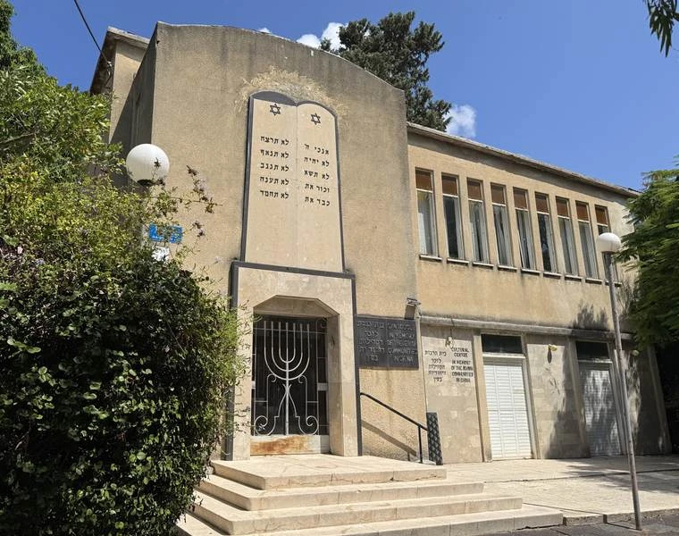
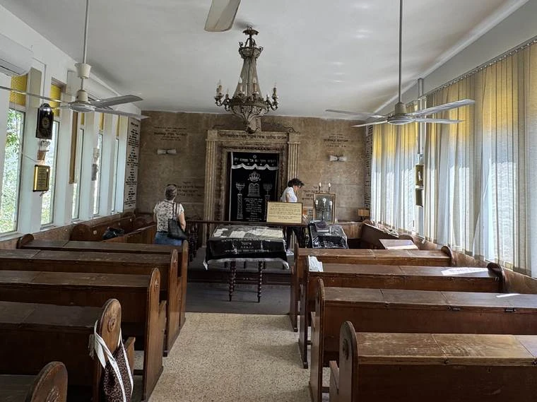
ברחוב הגולן 31 בשכונת רמת החייל בתל אביב, בחצר גדולה ובה עצים גבוהים ושיחים עבותים, נמצא ״בית הכנסת של עולי סין״. לצד בית הכנסת שביל המחבר בין שני רחובות. בשביל רצים ילדים, עוברים אנשים הממהרים לעבודה, מהשביל הזה מגיעה הגברת שמאכילה את החתולים, ומהשביל הזה מגיעים לרחובות צרים בהם אפשר למצוא חנייה. ואני תוהה, האם השכנים, הילדים, העוברים ושבים עצרו ליד הכניסה הראשית של בית הכנסת ושאלו מי אלה עולי סין ומדוע זה שמו של בית הכנסת.
קצת היסטוריה
בשנת 1954, בעקבות פיתוח שנגחאי, נהרס אחד מבתי הכנסת בעיר (חלקם, יחד עם מבנים נוספים של הקהילה היהודית, הפכו לרכוש ממשלתי). ממשלת סין, שלמרות שעדיין לא היו לה יחסים דיפלומטיים עם ישראל, רצתה כמחווה של רצון טוב לפצות על הרס בית הכנסת. דרך הקונסוליות בברן שבשוויץ העבירה הממשלה הסינית לישראל סכום כסף שווה בערכו לזה של בית הכנסת ההרוס. התנאי לקבלת הכסף היה שהוא יוקדש לבניית בית כנסת חדש בישראל. עיריית תל־אביב תרמה חלקת אדמה ברחוב הגולן שברמת החי״ל (״שיכון שנגחאי״ באותה תקופה).
עם הכסף מממשלת סין, תרומות מתושבי סין לשעבר ותרומתה של משפחת פונבה — בית הכנסת קם לזכר הקהילות היהודיות בסין. הוא נחנך רשמית ב־1962. לוחות נתלו על קירותיו לזכר מנהיגי הקהילות והתורמים לבנייתו מישראל ומהעולם.
החזון שלנו
בית הכנסת הינו רכושו של האיגוד ואחזקתו מתבצעת על־ידו ומתקציבו. במשך השנים, היווה בית הכנסת מרכז חשוב ומשמעותי עבור חברי איגוד סין. בבית הכנסת נערכו חתונות, אירועי בר מצווה ובת מצווה ומפגשים חגיגיים שונים.
כחלק מתוכניות שימור המורשת של יהדות סין, אנו פועלים לאיתור אפשרויות מימון לשיפוץ בית הכנסת, במטרה להפוך אותו לבית לקהילה שלנו – לא רק בית תפילה, אלא מקום של מפגש, תרבות ושימור מורשת, שיהיה פתוח לכולם.
בנוסף, אנו שואפים להקים במקום מוזיאון קטן שיספר את סיפורם של יהודי סין. מקום שיאפשר לדורות הבאים להכיר את השורשים, להבין מאין הגיעו ולשמור את הסיפור חי – לא רק עבור צאצאי יהודי סין, אלא עבור הקהל הרחב וכל מי שמתעניין בהיסטוריה ובמורשת הייחודית הזו.
בכנס ה־27 של איגוד המוזיאונים העולמי שהתקיים בפראג באוגוסט 2022 בנושא ״כוחם של מוזיאונים״, נקבעה הגדרה חדשה (לא סופית) למילה מוזיאון: מוזיאון הוא מוסד קבע, ללא כוונת רווח, הפועל בשירות החברה, אשר חוקר, אוסף, משמר, מפרש ומציג מורשת מוחשית ובלתי מוחשית. המוזיאונים פתוחים לציבור, נגישים, מכילים ומטפחים מגוון וקיימות. הם פועלים ומתקשרים באופן אתי, מקצועי ובשיתוף קהילות, ומציעים חוויות מגוונות של חינוך, הנאה, התבוננות ושיתוף ידע.
בחרבין, טיאנג׳ין ושנגחאי בתי הכנסת שימשו, מעבר למטרה העיקרית של בית תפילה, גם מקום מפגש, התכנסות לילדים ולמבוגרים, חגיגות ואסיפות. ■
בואו להיות שותפים
אנחנו באיגוד יוצאי סין רוצים להפוך את ״בית הכנסת של עולי סין״ לבית — בית של קהילה, זיכרונות ומורשת.
מה הייתם רוצים למצוא בבית של יוצאי סין?
איזה סיפור משפחתי הייתם רוצים לראות נשמר?
אילו תמונות או חפצים נמצאים אצלכם בבית ויכולים לספר משהו על החיים של המשפחה בסין?
אנחנו מזמינים אתכם לקחת חלק בתהליך –
לשתף, להציע, לספר ולחשוב איתנו איך ייראה הבית המשותף שלנו.
יחד נוכל להפוך את ״בית הכנסת של עולי סין״ למקום חי, פתוח ופועם, שמחבר בין מי שהיו שם, מי שחיים כאן היום, לבין הדורות שיבואו.
מלגות תשפ״ו
מילגה של קהילה כמו משפחההכירו את מקבלי המלגות של תשפ״ו
65 מלגות הוענקו השנה לצעירים ולצעירות, נכדים ונינים למשפחות יוצאי סין. בזכות קרנות הזיכרון שהקימו בני הקהילה לאורך השנים, אנו ממשיכים להשקיע בדור הבא — דור של מצוינות, שייכות והמשכיות.
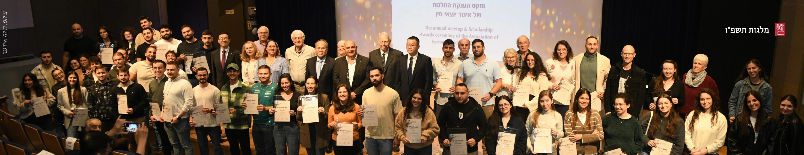
צילום: הילה אייזינגר
מקבלי מלגות מקהילת יוצאי חרבין
תרומת קרן איגוד יוצאי סין לזכר הקהילה היהודית בסין
ביטון אושרי, נכדה של אסתר (פרידה) ונדל · בר אורין טרייבר שקד, נכדתה של פנינה טרייבר · ברנע עידן, נינתה של חנה פרידוביץ׳ בלקומין · גולדינר לינוי, נכדתה של מיה (מרים) גולדינר טנדט · גולדינר רוני, נכדתה של מיה (מרים) גולדינר טנדט · גילעד שיר, נכדתו של יוסף גילעד · גרשון לינוי, נכדתה של אניה מזרחי · דגני אורי, נכדתו של הנרי למברג · וגנר ניצן דני, נכדו של דניאל מילר
תרומת קרן איגוד יוצאי סין לזכר תדי קאופמן ז״ל
חזיז דנה, נכדתם של בלה וישראל צ׳רנומורסקי · יניר ניב, נכדתה של יהודית סנדל · יסינובר רותם, נכדו של שמעון יסינובר
תרומתה של ליאורה טנדט לזכר גסיה ויאשה טנדט וריבה שוחט ז״ל ולובה וליובה ברונר ז״ל
ביטון נועה, נכדתו של משה קרוטר · ברגר מור, נכדתו של לב סנדלר
תרומתם של מרים יקיר ואריה טנדט לזכר ליקה (לאה) ומילה (שמואל) טנדט ז״ל
בריל מענית, נכדתו של גרשון פיין
תרומתם של גיורא ואילנה לסק לזכר אלה ושלמה לסק ז״ל ומרים ודניאל ברקוביץ׳ ז״ל
אורנשטיין איתמר, נכדו של מנחם מוסייב (אסיף) · אלעזר נתן, נכדו של נח דרגון
תרומתם של יהודית מרום וינון פרי לזכר רחל (רייצ׳ל) ויצחק (ייסאי) פרסוב ז״ל
בוטון נעמי, נכדתו של פול מילר (שרגא) · בוטון רות, נכדתו של פול מילר (שרגא)
תרומתו של יקי מטלין לזכר בוריס מטלין ז״ל
קפון ניר, נכדו של שמואל כסלו
תרומת קרן פרנק ואת׳ל דון
יפה עופר, נכדו של שלמה ירחו · לבוביץ׳ יעקב, נכדה של רחל לבוביץ׳ ונינה של גניה גולניק · ליובמן מירי, נכדתה של צציליה ליובמן · לסמן נוי, נכדתה של איזבל בלה טיקוצקי · מורדכוביץ׳ חגי, נכדו של אריה מורדכוביץ׳ · מקוב ארבל, נכדה של דינה טריגובוב קידר · נבון גלי, נכדתה של אסתר כץ · נובהארי עדן, נכדתו של נוח דרגון · סימר טל, נכדם של מולי בלום ומשה סימרינוב · ספיר נועה, נינתם של סילביה ונפתלי שרון · סרוסי גלעד, נכדם של ראובן וטנייה שליפר · פוחודייב איליה, נכדה של אספיר ירכו · רובינסון רחל, נכדתם של נדיה וזאב רובינסון · שדה כפיר, נכדו של נתניאל פדוביץ׳ ונינה של ברוריה גלזמן · שוחט עידן, נכדו של אריה שוחט · שטרנברג נועם, נינתם של ניוסיה ודוד חנין · שמואלי איסר, נכדה של חטינה קרבצקי דג׳מלה · שמואלי ברק, נכדה של חטינה קרבצקי דג׳מלה
מקבלי מלגות מקהילת יוצאי שנגחאי
תרומתה של רמה שלמוני (רוזן) לזכר ערן ונורית רוזן ז״ל
בחנוף ענבר, נכדתו של נתן בחנוף
תרומתו של דרור טריגובוב לכבוד אביו משה טריגובוב שייבדל לחיים ארוכים
לאו בן, נכדה של אווה לאו
תרומת קרן איגוד יוצאי סין לזכר הקהילה היהודית בסין
בומש אביעד, נכד של יוסי בומש · בומש שחר, נכד של יוסי בומש · בלוך־ווסט אליענה טופז, נכדתם של יוג׳ין וג׳ורג׳ בלוך · בן יוסף לירי רנה, נכדתה של אילנה בן יוסף ונינתו של דויד וולוביק · ברזני גל, נכדתה של אריקה שלזינגר · גרשון עמית, נינם של הדסה ודויד וולוביק
תרומת קרן איגוד יוצאי סין לזכר תדי קאופמן ז״ל
ונדל אייל, נכדה של אסתר ונדל · חפץ תומר, נכדה של רחל הלל · טאוב גיא, נכדם של מיכאל ומלכה לאור
תרומת קרן פרנק ואת׳ל דון
ירון יובל, נכדתה של מרים האוזמן מיינצר · כהן שחר, נכדה של קלרה כהן ונינה של אריקה ווילהויט · כסיף יסמין, נכדתה של זלטה (טוסיה) שגרין כסיף · סרוסי ברום גל, נכדתה של קלייר כהן · קלפוס אפרת, נכדתה של חיה רבקה רות טורונצ׳יק קלפוס · קלפוס כונן רני, נכדתה של חיה רבקה רות טורונצ׳יק קלפוס · רעם תמר, נכדתו של אריה רעם משנחאי · שגרין נטלי, ביתו של מייק (מרסל) שגרין · שפרירי עידו, נכדם של עליזה פרידה שפרירי (גורדון) · שפרירי יפתח, נכדם של עליזה פרידה שפרירי (גורדון)
מקבלי מלגות מקהילת יוצאי טיאנג׳ין
תרומת המשפחה לזכר דינה טריגובוב־קדר ז״ל
גפן יואב, נכדו של דניאל פרידמן · גפן עמוס, נכדו של דניאל פרידמן
תרומת קרן איגוד יוצאי סין לזכר הקהילה היהודית בסין
בר אור יריב, נכד של אייבי כסלו (קיסילוב)
תרומת קרן איגוד יוצאי סין לזכר תדי קאופמן ז״ל
זיו חן, נכדתה של מרים שוורץ
מקבלי מלגות מקהילת יוצאי קונמינג
תרומת קרן פרנק ואת׳ל דון
מיינצר יונתן, נינם של וילהלם וסילינג מיינצר ונכדו של ישראל מיינצר
מקבלי מלגות מקהילת יוצאי ווסו (שיחו)
קנובובץ אלכסנדר, נכדה של לידיה נונין
אבא ואמא מסין
המשפחה הסינית
מאת: ליאת מילר, ביתו של סם מילר
מה נשאר איתנו מהמקום שבו נולדנו, גם אחרי שעברנו אלפי קילומטרים ובנינו את חיינו במקום אחר? עבור ליאת מילר, סין הייתה הרבה יותר מארץ המוצא של הוריה. היא הייתה שפה, חברים, סיפורים וזיכרונות ובעיקר חלק בלתי נפרד מהבית.
כילדה קטנה תמיד הייתי מעט מבולבלת לגבי מוצא הוריי. תגובתם של השואלים לתשובתה של ילדה עם שיער שחור וחלק המכסה עיני שקד — ״את באמת נראית קצת סינית״ — סיפקה עבורי את האסמכתא המושלמת לארץ מוצאם של הוריי, סם וחנה מילר, שניהם ילידי סין.
בבית התנהל תמיד הוויכוח הנצחי בין שתי ערי ילדותם. אבא, שגדל בטיאנג׳ין, עיר נמל בינלאומית גדולה ומשגשגת, טען כמובן לעליונותה על פני עיר הולדתה של אמא, חרבין. אמא זכרה את חרבין כעיר גדולה ותוססת, בעלת אופי רוסי מובהק וחיי קהילה עשירים; אבא אהב להרגיז אותה ולטעון שמדובר בסך הכול בעיירה של רחוב אחד.
השורשים ה״סיניים״ מילאו את הבית, לא רק בריהוט ובחפצי אמנות, אלא בעיקר בחבריהם הסינים: הארי מרינסקי, טדי קאופמן, ג׳ורג׳ פוליאק, בובי ברשדצקי, ג׳ורג׳ קנפול ועוד רבים אחרים.
אלה, כמובן, היו חברי הילדות שגדלו בטיאנג׳ין ובקהילות יהודיות נוספות של סין ועלו, ברובם, לארץ. לימים נישאו, חלקם ליוצאי סין כמוהם וחלקם לילידי הארץ, אך קשרי החברות ביניהם נותרו עמוקים וליוו אותם לכל אורך חייהם.
מאחורי החברויות האלה עמד גם סיפורו של דור יהודי־ציוני שגדל בצד השני של העולם, אבל ארץ ישראל הייתה נוכחת בחייו כבר מגיל צעיר. אבא והארי מרינסקי יצאו מסין עוד לפני קום המדינה בדרכם לארץ, ובהמשך חזרו לסין כדי לסייע לצעירים נוספים מבני הקהילה לעשות את דרכם לכאן. זה היה חלק מסיפור חייהם, אבל עבורי, הרבה לפני שהבנתי את משמעותו ההיסטורית, הם פשוט היו החברים של אבא ואמא.
עבורי, ״משפחת הסינים״ הייתה המשפחה המורחבת שלי, תמיד מחבקת, תמיד מלאה בסיפורים ובשמחת חיים. בכל פעם שנפגשו, לא משנה אם היו בני חמישים, שישים, שמונים ואף יותר, משהו בהם השתנה. יחד הם חזרו להיות אותם נערים ונערות צעירים שגדלו בצד השני של העולם וחלמו על ארץ ישראל. אותו ניצוץ — אומץ, שובבות אולי — לא עזב אותם מעולם.
נדמה לי שסין עצמה שמרה אצלם משהו מן הנעורים האלה. אולי משום שעזבו אותה צעירים כל כך, אולי משום שכל כך הרבה מן הזיכרונות המשותפים שלהם נשארו שם.
בחזרה לטיאנג׳ין
בשנת 1998 יצאנו לטיול שורשים — אבא, אמא, אילנה אחותי ושני ילדיה הגדולים שאולי ונועה, פיני מרינסקי, בנו של הארי, ושתי בנותיו, ואילנה אולשבסקי, שבעלה אריה היה אף הוא יליד סין. חזרנו לערי ילדותם וזכינו לראות במו עינינו את המקומות שעד אז הכרנו בעיקר מן הסיפורים: את בית הכנסת הישן, את בית הספר הבריטי שבו אבא למד, ואפילו את בית ילדותו בטיאנג׳ין.
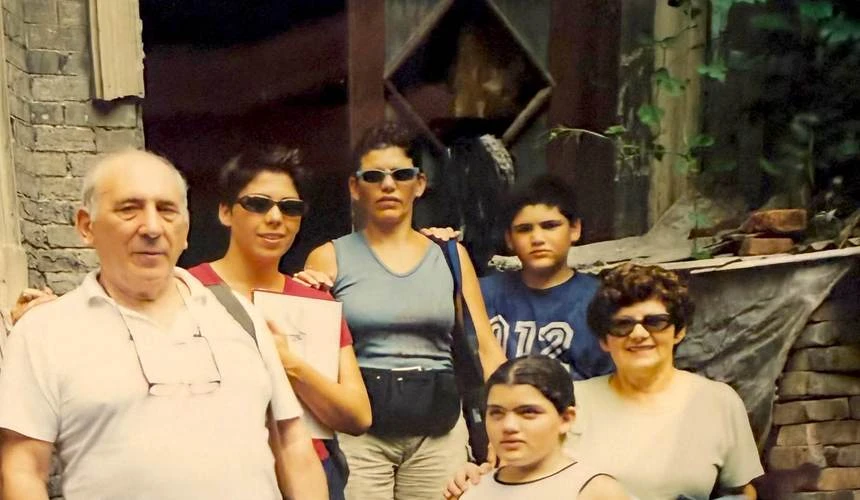
אבי סאם, אני, אחותי אילנה וילדיה שאולי ונועה ואימי חנה
אני זוכרת במיוחד את הדרך אל הבית. צריך לזכור — אלה היו ימים שלפני טלפונים חכמים, מפות גוגל או וייז. הסתובבנו בסמטאות הקטנות של טיאנג׳ין, ואבא, אז כבר כמעט בן שבעים, לא נזקק לדבר. הוא ידע בדיוק לאן ללכת. בצעדים מהירים ובטוחים הוביל אותנו מסמטה לסמטה, כאילו עזב את השכונה רק אתמול, ולרגע היה נדמה שהוא שוב אותו נער בן שמונה־עשרה.
להפתעתנו, הבית עדיין עמד שם בשלמותו.
גם תיירים מערביים כמעט שלא נראו אז בסין, ובוודאי שלא בסמטאות האלה, כך שדי בלטנו בנוף, חבורה של כעשרה ״לבנים״ צועדת יחד בין בתי השכונה.
בצד הדרך עמדו אב סיני ובנו הקטן. הילד הביט בנו בסקרנות ושאל את אביו, במנדרינית כמובן, מה עושים כאן כל הלבנים האלה.
מה שהוא לא ידע הוא שאחד מאותם ״לבנים״ היה אבא שלי.
אבא דיבר קרוב לשמונה שפות, וביניהן מנדרינית, שאותה למד בילדותו מהמטפלת הסינית שעבדה בבית משפחתו. בלי להסס הוא פנה אל הילד וענה לו, במנדרינית רהוטה:
״אני? זה היה הבית שלי. נולדתי כאן.״
הילד ואביו נותרו לרגע פעורי פה. משם כבר התפתחה שיחה קולחת בין השלושה, שבסופה אפשרו לנו גם להיכנס פנימה ולסייר בבית.
וכך, כמעט חמישים שנה אחרי שעזב את טיאנג׳ין, אבא נכנס שוב לבית שבו נולד וגדל — הפעם יחד איתנו.
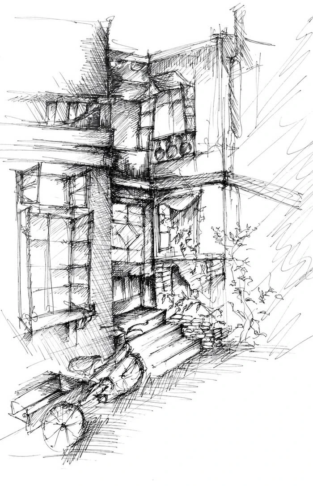
הבית של סם מילר בטיאנג׳ין. איור: ליאת מילר
מה שנשאר איתנו
שנים אחר כך, אני כמובן יודעת שאינני סינית. אבל נדמה לי שמה שנשאר איתי יותר מכול הוא ההבנה שסין מעולם לא הייתה עבורם רק המקום שממנו באו. היא נשארה חלק מן הבית שבנו כאן.
אולי משום כך היה איגוד יוצאי סין משמעותי כל כך עבורו. האיגוד היה הרבה יותר ממסגרת חברתית או מקום להעלאת זיכרונות. הוא היה דרך לשמור על החוט שחיבר בין האנשים, בין המקומות, ובין מי שהיו שם למי שהפכו להיות כאן; לשמר את המורשת, את החברויות ואת הערכים שעליהם גדלו, ולהבטיח שהסיפורים האלה לא ייעלמו יחד עם הדור שנשא אותם.
ובתוך כל אלה נשמרה גם ארץ ישראל כפי שנראתה להם אז, ממרחק של אלפי קילומטרים, לא רק כמקום, אלא כהבטחה. הבטחה לבית, לחירות, לשייכות ולחברה שאפשר לבנות יחד.
נדמה לי שעבור אבא, השמירה על הסיפור הזה לא הייתה רק מבט לאחור. הייתה בה גם תקווה, שאותה ארץ שהייתה עבורם אז חלום והבטחה, תדע להיות כזאת שוב. ■
מאחורי הפריים: תמונה אחת. 100 מילים. סיפור שנשאר.
רוח חרבין בכובע קסמים / ענת פרידמן
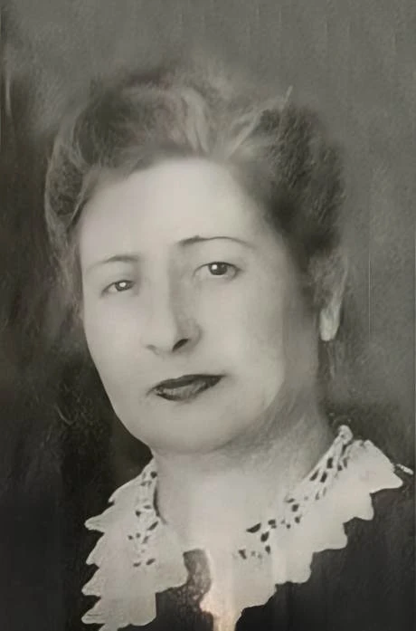
בָּבָּה רִיבָה
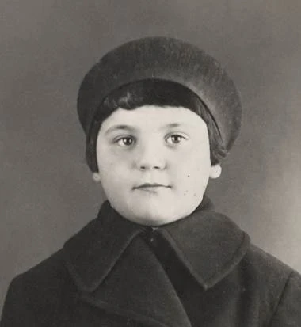
טנייה שליפר
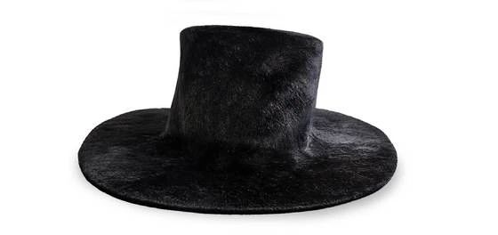
כובע מקורי בעיצובה של בָּבָּה רִיבָה, שנשמר אצל נינתה ליאורה טנדט לאורך השנים
סבתי, בָּבָּה רִיבָה — רִיבָה שוחט — הייתה כובענית: אומנית שעיצבה ויצרה כובעי נשים בעבודת יד עדינה, מלאכת מחשבת של דמיון, יצירתיות ותפירה מדויקת. במשך שנים, כל שידעתי עליה היה סיפור מטושטש על חנות קטנה של כובעים ופרוות בחרבין המושלגת של תחילת המאה העשרים.
לפני כשנתיים, במהלך לימודי הסינית באיגוד, פגשתי את טנייה שליפר, ילידת חרבין, 1931. כשסיפרתי לה על שורשיי בחרבין, ועל בָּבָּה רִיבָה, עיניה אורו לפתע: ״אני הכרתי את רִיבָה! היא עיצבה והכינה לי את הכובע הראשון שלי, לכבוד בת המצווה״.
ברגע אחד, הכובע של טנייה הפך לכובע קסמים אמיתי. הוא ביטל את חוקי הזמן, וחוט עדין של משי ונוסטלגיה החזיר לחיים פיסת היסטוריה משפחתית חמה, שחיכתה כמעט מאה שנה להתגלות.
ביתר״ית מלידה / מילי מקוב
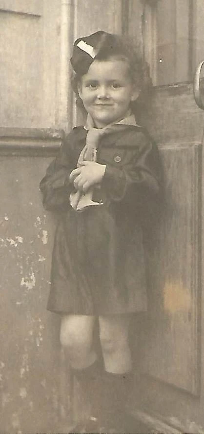
דינה טריגובוב־קדר, בת כארבע, מצולמת בחרבין שבסין בשנת 1943 או 1944, לבושה בתלבושת בית״ר.
חרבין הייתה אז בית לקהילה יהודית ציונית ותוססת, ששמרה על זהותה ועל חלומה הלאומי גם הרחק מארץ ישראל. הוריה של דינה חינכו אותה ברוח ערכי בית״ר – אחריות, גאווה יהודית ואהבת המולדת.
בעוד העולם היה נתון לטלטלות המלחמה, ניצבת דינה הקטנה בחיוך בטוח ותמים, מבלי לדעת שהתמונה הזו תשמר סיפור של זהות ושייכות. התמונה היא יותר מזיכרון משפחתי; היא עדות לכוחה של קהילה ששמרה על תקווה, מסורת וחזון גם בקצה השני של העולם.
חיבוק על נהר הסונגרי / מילי מקוב
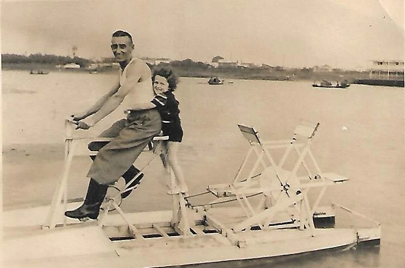
על נהר הסונגרי (בסינית: סונגחואה) בחרבין שבסין, באחד מימי הקיץ של שנות הארבעים, שטו ברוך (בוריה) טריגובוב ובתו הקטנה דינה בסירת פדלים. המים השקטים נפרשו סביבם, והרוח הקלה של הנהר ליוותה את רגע האושר המשפחתי.
עבור דינה הייתה זו הרפתקה קטנה, ועבור אביה, הזדמנות לבלות עם בתו האהובה. עבור יהודי חרבין, נהר הסונגרי היה חלק בלתי נפרד מחיי היום־יום, מקום להחלקה על הקרח בחודשי החורף, ובקיץ — בילוי ומנוחה.
התצלום לוכד רגע של חום, אהבה וקרבה משפחתית, ומנציח את חייה של הקהילה היהודית בחרבין, ששמרה על שמחת החיים ועל תקווה גם בימים של אי־ודאות בעולם.
כשזאב בלע מוצץ / ליאורה טנדט
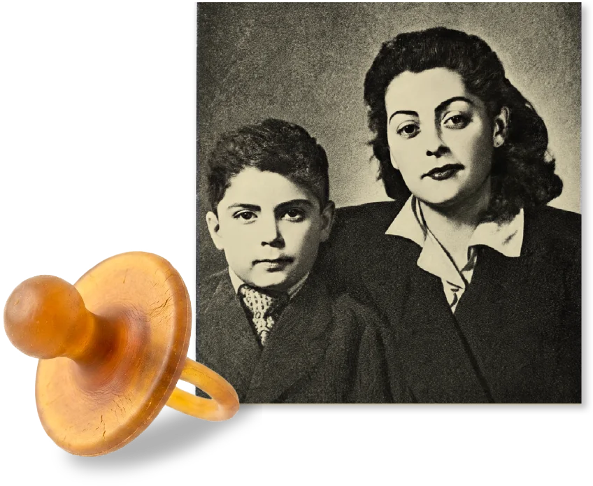
בתמונה סבתי, גניה טנדט לבית שוחט, ואבי, זאב, שניהם ילידי חרבין.
סבתי סיפרה שכאשר אבי היה עולל קטן בחרבין, הוא בלע את המוצץ שלו. היא נבהלה מאוד ורצה איתו לרופא. לאחר שבדק אותו, אמר הרופא בחיוך: ״גברת טנדט, פשוט תקני לו מוצץ חדש!״
הכפית מהונג קונג / דרור טריגובוב
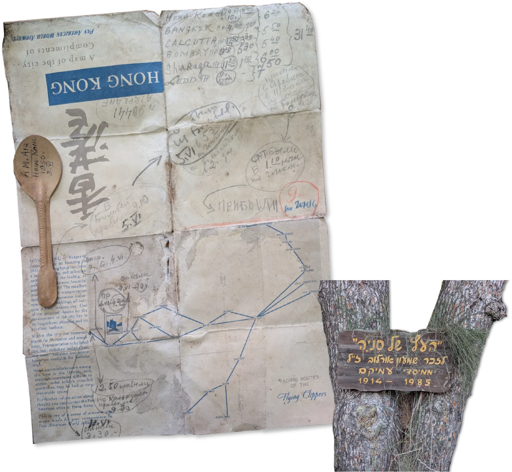
בכניסה למושב עמיקם, על גזע עץ, קבוע שלט הנושא את הכיתוב: ״העץ של סניה, לזכר שמעון אורלוב ז״ל, ממייסדי עמיקם״.
אין לי קשר משפחתי עם סניה אורלוב, ואף לא זכיתי להכירו. סניה, יליד חרבין, נפטר כשנה לאחר שנולדתי. אך הקשר המיוחד שלו עם סבי וסבתי, מניה ובוריה טריגובוב, הותיר חותם — וחלק מחפציו של המתעד הנלהב נשמרו בבית הוריי, ליה ומוריק טריגובוב, גם עשרות שנים לאחר מותו.
בין חפציו שנשמרו: כפית עץ שהוגשה במהלך טיסה שהמריאה מהונג קונג במסע עלייתו לארץ, ורישום מדויק של עצירות הביניים וזמני ההגעה: הונג קונג, בנגקוק, כלכותה, בומביי, שארג׳ה ולוד.
בבית הקברות היהודי בחרבין / רה״מ לשעבר אהוד אולמרט
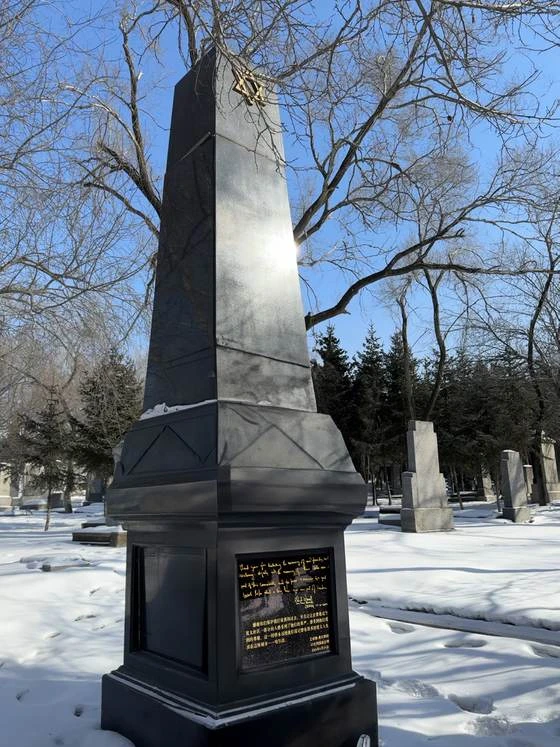
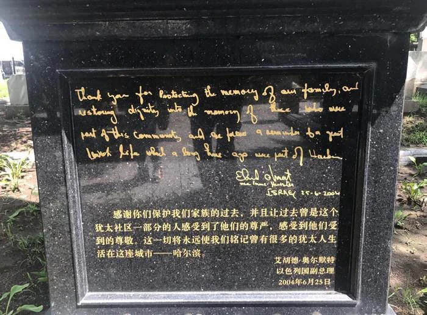
בית העלמין היהודי בעיר חרבין מטופל ומטופח על ידי ממשלת המחוז, אשר טורחת לשמר את המורשת היהודית של העיר הזו, השוכנת באזור מנצ׳וריה בצפון מזרח סין. באחד מהרחובות הראשיים של העיר נמצא בית הכנסת אשר מספר המתפללים בו תלוי בדרך כלל במספר המבקרים היהודים המזדמנים לעיר, הן לתיירות וגם לעסקים. גם מסעדה יהודית נמצאת בקרבת מקום.
לי, ולבני משפחתי, בית הקברות הוא המקום שאליו אני מגיע מייד בתחילת הביקור שלי בעיר. שם קבור סבא שלי יוסף אולמרט ז״ל, ושם קבורים כמה בני משפחה נוספים שגרו בעיר הזו.
בתמונה המצורפת אפשר לראות אותי עם רעייתי עליזה ואחי הבכור עמי ז״ל, שהיה במועד ביקורי שם נספח לענייני חקלאות של ממשלת ישראל. זה היה הביקור הראשון שלי בחרבין בהיותי ממלא תפקיד רשמי — אז ממלא מקום ראש הממשלה ושר התמ״ת.
בכניסה לבית העלמין הוצב עמוד שיש גדול ובמרכזו משפט תודה שכתבתי לשלטונות הסינים על הטיפוח של המורשת היהודית בארצם. המילים, בכתב ידי, חרותות באותיות זהב במרכזו של עמוד השיש.
בית העלמין היהודי הוא אתר תיירות המופיע בחוברות הסברה המיועדות למבקרים בסין. בשבילי, בשביל אחי ובני משפחתי — הוא נקודת המוצא. מכאן, מהעיר הזו, יצאו הוריי לארץ ישראל, ולכאן שבתי כראש ממשלת ישראל, לכבד את זכרו של סבי יוסף ז״ל שחי בעיר הזו משנת 1917 ושם נפטר ונקבר ב־1941.
סין היא חלק מהביוגרפיה של משפחתי ושלי. הייתה כל חיי — ותישאר.
ארבעה דורות מחרבין להקמת מושב עמיקם / מרים יקיר
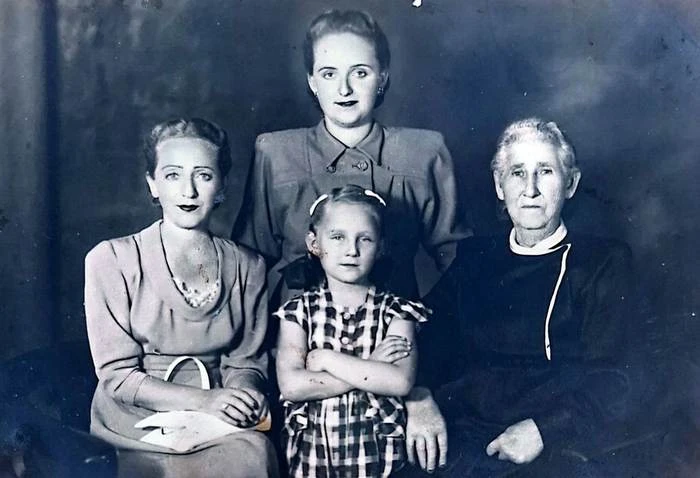
תמונה משפחתית היסטורית זו צולמה בחרבין שבסין, ובה מונצחים ארבעה דורות של נשות המשפחה. מימין יושבת סבתא ורה ליפסון, משמאל יושבת ביתה רוזה גולדשמידט, מאחוריה עומדת נכדתה, ליקה־לאה גולדשמידט, ובמרכז קדמת התמונה עומדת הנינה, הילדה מרים יקיר (לשעבר טנדט).
המשפחה עלתה מסין ארצה מתוך חזון ציוני עמוק לבניית הארץ. יחד עם שמואל (מילה) טנדט שנישא לליקה ועוד 23 משפחות נוספות מיוצאי סין, הם עלו ישירות לקרקע, הפכו לחלוצים ומייסדים והקימו את המושב הבית״רי החדש — מושב עמיקם. מורשתם חיה ופועמת בנו עד היום.
הפתעה על קיר המוזיאון / משה ליכומנוב
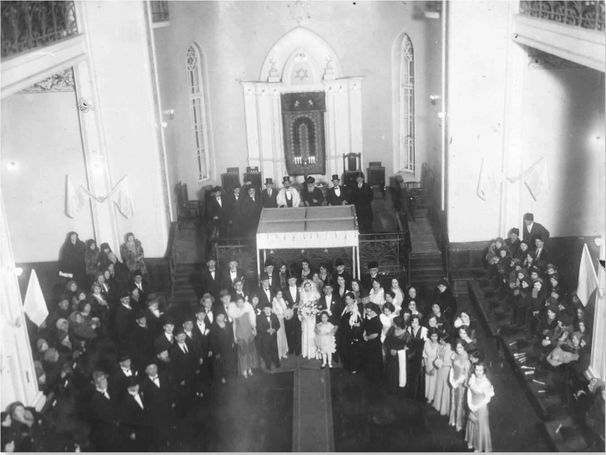
התמונה המקורית באלבום התמונות של המשפחה
זהו צילום טקס חתונתם המפואר של הוריי, סופיה בירולין ואריה ליכומנוב, בבית הכנסת החדש בחרבין בשנת 1933. התמונה צולמה על ידי הצלם הידוע יעקב ליפשיץ, שהיה דודה של אימי, הכלה, סופיה.
התמונה נשמרה באלבום המשפחתי במשך שנים רבות, ואני הכרתי אותה מאז ילדותי. והנה, בביקור השורשים שערכנו אחותי דינה ז״ל ואני בבית הכנסת החדש בחרבין בשנת 2006, נדהמנו לגלות את תמונת החתונה מוצגת במוזיאון, ולצידה פרטי הסבר לא מדויקים.
אחראי המוזיאון לא ידע מי המצולמים בתמונה, מתי צולמה ומי היה הצלם. כמובן שסיפקנו לו את הפרטים הנכונים. הוא הופתע, רשם את שמות החתן והכלה ואת יתר הפרטים, והבטיח לעדכן את הכיתוב.
אחותי, דינה וינקוב ליכומנוב ז״ל, ואני, עומדים ליד התמונה המוצגת, מתפעלים ותוהים כיצד הגיעה לידי הסינים.
מי את גיטה קלישק, מוריאל אונגמוט? / עופר דרור
אמי, גיטה קלישק, נולדה להוריה אווה ומאייר בדרזדן שבגרמניה בשנת 1932. תקופה קצרה לאחר מכן, היטלר עלה לשלטון.
אביה, שהיה אדם עם חושים מחודדים, הודיע לסבתי שעכשיו, כשהיטלר עלה לשלטון, הם חייבים לעזוב לפריז. אמי הייתה בת מספר חודשים ואחותה סוניה כשנתיים גדולה יותר. סבי עשה חייל בעסקיו והתעשר מאוד.
בשנת 1940 הגרמנים נכנסו לפריז וסבי, שהיה בעל חנות לתכשיטים, קנה פספורטים לו, לאשתו ולשתי בנותיו מגוי שוויצרי. השוויצרי דיווח לשלטונות על אובדן המסמכים לאחר 3 ימים, מה שאפשר למשפחה לברוח למרסיי. כולם קבלו שמות חדשים: אמי הפכה למוריאל, אחותה סוניה לג׳ני ושם המשפחה היה אונגמוט. תוך 3 ימים עלו על אנייה ששטה לשנגחאי שבסין. הם הגיעו לשם כשוויצרים לא יהודים. הם גרו באזור צרפתי.
כשהיפנים כבשו את שנגחאי הם הקימו מחנות ריכוז ליהודים בלי שהבינו איך ולמה, אולם ביצעו את הדרישה הזו של בעלי בריתם הגרמנים כלשונה. ליהודים אסור היה לעזוב את הגטו למעט במקרים בהם הייתה להם עבודה מחוץ לגטו. סבי מאייר ״העסיק״ כ־40 מהם ובכך עזר להם לצאת ולהתפרנס.
בשנת 1949 יצאה אונייה שנשכרה על ידי ה־UJF (United Jewish Federation) משנגחאי לישראל ולאמריקה. אמי ואחותה הפליגו בספינה זו והגיעו לארץ לאחר מסע של מספר חודשים. הוריה חיכו להם בארץ וכולם נקלטו כאן בהצלחה.
רגע לפני שהדרכים נפרדו / אירית פרידמן ושרית כרמי, בנותיה של זלדה
לאה (ליקה) גנקין ז״ל, דודתנו, וזלדה גנקין ז״ל, אמנו, היו שתי אחיות שעמדו באותה עת בפני פרידה שתעצב את חייהן. בילדותן התייתמו מאימן. עם סיום מלחמת העולם השנייה איבדו גם את אביהן, מאיר, ואת אחיהן אברהם, שנרצחו בטבח שביצעו היפנים בעיר חרבין. הטרגדיות שחוו חיזקו את הקשר העמוק שנרקם ביניהן.
בתמונה הן עדיין צעירות מאוד, ניצבות בפני אחת ההחלטות המשמעותיות בחייהן: האם להמשיך לחיות יחד כפי שעשו עד אז, או להיפרד ולצאת כל אחת לדרך משלה.
ליקה עמדה להינשא ליעקב (יאשה) ולהגר עם הוריו לאוסטרליה. זלדה התלבטה אם להצטרף אליה או לפתוח חיים חדשים לבדה. בינתיים ניצלו השתיים את ימיהן האחרונים יחד כדי לטייל באתרים ששרדו את ההרס שהותיר אחריו הצבא היפני בנסיגתו, וליצור עוד זיכרונות משותפים.
מתוך הזדהות עמוקה עם רוח התנועה הציונית, החליטה זלדה להיפרד מאחותה ולעלות לבדה לישראל. היא הגיעה לבית החלוצות בחיפה, שם החלה לבנות את דרכה האישית והמקצועית בארץ החדשה ונישאה לדוד פרידמן.
ליקה לעומתה, היגרה עם משפחתה לסידני שבאוסטרליה. למרות המרחק הרב, שמרו שתי האחיות על קשר קרוב לאורך כל חייהן – באמצעות מכתבים, שיחות טלפון וביקורים הדדיים.
סין שלי / אפרת מרגלית
מאז שהתחלתי לעבוד באיגוד יוצאי סין שואלים אותי מה הקשר שלי לסין. אז לא, המשפחה שלי לא הגיעה מסין, ואני — את הסיפור שלי עם סין כתבתי וממשיכה לכתוב מאז ביקורי הראשון בשנת 1997, ואת השורשים בסין אני אומרת, שנטעתי בעצמי.
אחת החוויות החזקות והמשמעותיות שחוויתי בשנים בהן חייתי וטיילתי בסין, היתה הנסיעה לפסטיבל הקרח בחרבין. סיימתי את קורס הסינית באוניברסיטה לשפות ותרבות (BLCU) בבייג׳ין והמשכתי לטייל במדינה הענקית. החלטתי לקחת רכבת שינה מבייג׳ין, שאז, בסוף שנת 2005, היתה איטית וישנה. הצטיידתי בבגדים חמים במיוחד באחד השווקים ויצאתי למסע. אחרי שעות ארוכות של נופי כפרים מכוסי שלג ונחלים קפואים הגעתי לתחנת הרכבת בחרבין. הקור העז היכה בי ברגע שיצאתי מקרון הרכבת ואיתו הלכה וגברה הסקרנות.
זה היה בסוף דצמבר ואת ערב השנה האזרחית החדשה 2006 חגגתי במסעדה רוסית קטנה במרכז חרבין. ואז התחילו השאלות והמחשבות: מה לרוסים ולעיר בצפון סין? איך הגיעו לכאן היהודים ומהיכן? ומה הקשר לרכבת הטרנס־סיבירית (בה נסעתי כ־20 פעמים...)? ואיך חיים במזג אוויר קשה שכזה בחורף?
החיבור שלי לסין התחיל בשנות ה־90. אני חושבת שהקשר עם יהדות סין התחיל במסעדה רוסית קטנה, כשבחוץ מינוס 26 מעלות ופסלים וארמונות עשויים קרח, ואצלי עוד התחלה של סיפור. את סין עזבתי ברכבת הטרנס־מונגולית, דרך מונגוליה לסיביר. וזו היתה רק הפעם הראשונה...
בשנת 2017 הזמינה חרבין את ילידי העיר מרחבי העולם למפגש יוצא דופן. לצד קהילות רבות שחיו בה לאורך השנים, השתתפו גם נציגי הקהילה היהודית מישראל – במסע שהפך למפגש מרגש של אנשים, זיכרונות ומורשת.
בשנת 2017 החליטה עיריית חרבין לקיים כנס מיוחד לכל ילידי העיר באשר הם. לצד הקהילה היהודית חיו בחרבין לאורך השנים קהילות רבות – רוסים ״לבנים״ (נאמני הצאר), גרמנים, אוקראינים, פולנים, לטבים, ליטאים, אסטונים, ארמנים, יפנים, קוריאנים, טטרים, יוונים, גאורגים ועוד.
הזמנות נשלחו לכל המדינות שבהן פועלים ארגונים של יוצאי חרבין. מישראל הגיעו שתי משלחות: האחת מטעם איגוד יוצאי סין, והשנייה מטעם עיריית גבעתיים – שאמנם לא הורכבה מילידי חרבין, אך מקיימת עד היום קשר של עיר תאומה עם העיר.
בחרבין פגשנו את פרופסור דן בן־כנען, ישראלי יהודי שהקים את משפחתו בעיר ומרצה באוניברסיטה המקומית. דן הצטרף אלינו בשמחה, הוסיף למפגש הרבה חום ועליצות והיה גשר נפלא בינינו לבין המקומיים.
״לא משנה היכן אתה נמצא — חרבין היא הבית שלי״: הכנס בעיתונות המקומית
תושבי חרבין יצאו מגדרם כדי להעניק למשלחות שהגיעו לכנס חוויה בלתי נשכחת. כל משלחת שוכנה במלון אחר ברחבי העיר, ואנחנו זכינו להתארח במלון ״מודרן״ המפורסם – מלון בעל עבר יהודי עשיר, שנותר גם בגילו המופלג מטופח ומרשים.
במהלך הביקור השתתפנו במגוון פעילויות: הפלגה על נהר סונגהואה (״סונגרי״ בפי אבותינו), ביקור בתחנת הרכבת ההיסטורית בצפון העיר, נשף חגיגי עם סעודה מפוארת, וסיורים באתרי המורשת היהודית – בתי הכנסת הישן והחדש, בית העלמין, בית החולים היהודי שהפך למרפאת עיניים ועוד.
ביקרנו גם באי השמש (טאייאנג דאו), השוכן בנהר סונגהואה, שבו מתקיים בחורף פסטיבל הקרח המפורסם, ובקיץ ניתן לטייל בין המונומנטים והנופים הייחודיים. בסמוך סיירנו בפארק הנמרים הסיביריים – בעלי חיים מרשימים, יפים ומעוררי יראה.
כחלק מביקורנו, השתתפנו בטקס מרגש של הסרת הלוט מעל לוח זיכרון לזכרם של אברהם ותדי קאופמן, ממנהיגי הקהילה היהודית בעיר. הטקס נערך במעמד מנהל אגף קשרי החוץ של עיריית חרבין, והלוח הוצב באופן סמלי בכניסה החיצונית לבית הכנסת החדש. האירוע היווה עדות חיה למחויבותה של העירייה לשימור המורשת היהודית העשירה בחרבין.
מימין: מנהל אגף קשרי החוץ של עיריית חרבין. משמאל: אלכס נחומסון
הביקור הזה נחרט בזיכרוני כחוויה יוצאת דופן – מפגש של אנשים, קהילות וזיכרונות, ואני מקווה שעוד מפגשים כאלה יתקיימו גם בעתיד. ■
מאת: אלכס נחומסון
מפגש חברים והדלקת נרות, נר ראשון של חנוכה, בשגרירות סין
SAVE THE DATE
4.12.2026
נר ראשון של חנוכה
אולם קבלת הפנים, בשגרירות סין, רח׳ הברזל 29, רמת החייל, תל אביב
at the Reception Hall, Embassy of the People's Republic of China, 29 HaBarzel St., Ramat HaHayal, Tel Aviv.
שמחים להיפגש שוב!
מפגש חברים, הדלקת נרות, סיפורים, השראה וכמובן
טקס הענקת מלגות תשפ״ז
בתכנית: 10:30 התכנסות וכיבוד קל 11:30 טקס הענקת מלגות לשנה״ל תשפ״ז
Let's get together!
The Annual Friends Meetup, Stories, Inspiration, Hanukkah Candle lighting &
Scholarship Awards 2026/27
Agenda: 10:30 Gathering and snacks 11:30 Scholarship Awards 2026/27
התמונות שעל השער האחורי
שער אחורי: 1. חרבין, הרחוב הראשי קיטאיסקייה 2. רח׳ ג׳ונגיאנג (קיטאיסקייה), 2025 3. גשר המנורות בפארק בחרבין, 2025 4. משפ׳ פודולסקי בפארק בחרבין, 1942 5. רחוב בחרבין 6. יוסי קליין ודינה טריגובוב, חרבין 7. פסטיבל הקרח בחרבין, 2026 8. מלון מודרן, רח׳ ג׳ונגיאנג (קיטאיסקייה), חרבין 2026
Bulletın3.0
The Grandma & Grandpa's Bulletin — 2026 Edition Association of Former Residents of China
Grandma & Grandpa Lit the Spark — We Keep It Burning
The Bulletin of the Association of Former Residents of China has been around for many years and serves as a warm, meaningful community space. Our goals are:
To strengthen the feeling of togetherness and shared identity among the Jewish community that once lived in China, and to involve the next generation in keeping the community and its story alive.
To keep a steady connection between former residents of China in Israel and around the world.
To help collect, document, preserve and share historical documents and personal stories that tell the unique tale of our community.
To support the Association's mission.
In this bulletin, we chose to shine a light on personal and family stories. The names, places, time period and memories. Where did they come from? How did their lives look like? How was childhood in China like? And which small moments lingered in their hearts?
Leadership of the Association of Former Residents of China
The Executive Committee:
Yossi Klein — Honorary President
Yaki Matlin — Chairman
Alex Nahumson — Vice Chairman
Mili Makov — Committee member
Dror Trigubof — Committee member
Efrat Margalit — Executive Director
Audit Committee:
Dganit Haber — Chairman
Liat Bracha
Bulletin Editorial:
Chief Editor: Efrat Margalit
Graphic design: Anat Friedman
Press: Ilan Print LTD
The front cover photographs
Front Cover: 1. Railway tracks in Harbin 2. The Old Synagogue in Harbin 3. Esther and Alexander Levitin 4. Yossi Klein and his parents Shmuel and Golda (Ola) 5. Jewish and Chinese girls, Harbin, 1922 (Sino-Israel Research & Study Center) 6. The Old Synagogue in Harbin — scene from the Chinese TV series "Never-Ending Summer" 7. Gesia and Yasha Tandt get married at the Old Synagogue
Contents
Chairman's Note
Dear Members of the AssociationYaki (Jacob) Matlin, Chairman
Every year, we hope we will not have to wait any longer for peace and better days. This year, more than ever, I wish that peace will come soon and stay with us, and that the year ahead will be a good one.
In this bulletin, we are delighted to introduce a new section: "Behind the Frame — One Picture, 100 Words, A Story That Remains." In it, we will share nostalgic moments that bring a smile to our faces and warmth to our hearts.
There is something special about the stories that stay with us over the years. They connect us to our roots, to the people who shaped our lives, and to the small moments and experiences that, with time, become part of who we are.
Each and every one of us has a family story that has stayed with us, a tradition passed down from one generation to the next, an old photograph, a dish that takes us back to childhood, or a story told again and again around the family table.
These moments hold a special kind of power. They bring us home, to the people we love and to the warmth that stays with us even as the years go by. They remind us that every family has its own stories, its laughter, traditions and memories that make it unique.
I invite you to share these stories, so that they may be passed on to future generations. Because the fond memories of yesterday are the gifts that stay with us today, and through them, and thanks to them, we will continue together to preserve the story of Jews of China.
Shana Tova! Yaki (Jacob) MatlinChairman of the Association of Former Residents of China
From the Chinese Ambassador
Dear Readers,
I am honored to be invited by your Bulletin and to have this opportunity to extend my warmest and most sincere greetings to all the friends of the Association of Former Residents of China.
During the Chinese People's War of Resistance Against Japanese Aggression and the World Anti-Fascist War, the Jewish people and the Chinese people shared hardships and stood together through difficult times, writing a memorable chapter in the history of China-Jewish friendship. You are the keepers and inheritors of this shared history. Your family stories and cherished memories are precious threads woven into the enduring friendship between our peoples, carrying the warmth of that shared history from one generation to the next.
Next year, we will celebrate the 35th anniversary of the establishment of diplomatic relations between China and Israel, as well as the 10th anniversary of the establishment of an innovative comprehensive partnership between the two countries.
Over the past three and a half decades, China-Israel relations have maintained steady and sound development despite various challenges, while practical cooperation has deepened across various fields. China has always viewed and developed its relations with Israel from a strategic and long-term perspective.
The Chinese Embassy in Israel stands ready to work together with the Association of Former Residents of China to further promote people-to-people exchanges between our two countries, strengthen the popular foundation of bilateral relations, and jointly ensure that the traditional friendship between China and Israel, and between the Chinese and Jewish peoples, continues to shine with renewed vitality in the new era.
H.E. Xiao JunzhengChinese Ambassador to Israel
From the Israeli Ambassador
Da Jia Hao to all readers,
I am delighted to have this opportunity to share my thoughts on the bond between Israel and China as the 35th anniversary of our relations approaches in 2027.
China is a cultural, social, scientific, economic, political superpower and more: a vast nation with a history spanning thousands of years. While the West was plunged into the darkness of the Middle Ages, by the 5th century China had already introduced a system of imperial examination for government positions and had invented gunpowder, paper and even ice cream.
After many years of suffering from wars, poverty and foreign influences, China managed to become one of the leading nations on the global arena. Every visitor to China is astounded by the sophisticated technologies its citizens enjoy, the impressive, futuristic urban architecture and the momentum of its state-of-the-art industries.
Israel, a small country yet a powerhouse in the field of innovation, can contribute greatly to areas relevant to the Chinese economy. These include population aging, one of the central challenges China faces, as well as education, particularly cultivating excellence and supporting students with special needs, agricultural research and development, water management and more.
Advancing relations between countries is not only a matter for governments. The bond between the nations is the core pillar connecting us, and in this context the Association of Former Residents of China serves as a bridge between us and the central government. Your history is a significant part of the shared heritage of our two nations, and we certainly view the Association as a partner in our efforts to strengthen relations with the superpowers in the East.
Next year we will be celebrating 35 years of diplomatic relations, and we are planning a series of events. We warmly invite both the Association and its individual members to take part in these events, visit China and get to know it better. People-to-people connections are always the foundational basis for relations between countries.
H.E. Eli BelotsercovskyAmbassador of Israel to China
What's Up at the Association
Efrat Margalit's ColumnExecutive Director
Another difficult year has passed, and I'm beginning my annual column with wishes for a good, peaceful, safe, healthy and happy year for all — in Israel and around the world. Despite the hardships and stress, we continued to work, plan and move forward, with the help of new members, children and grandchildren of Chinese-born Jews, dedicated to advancing the Association's work and preserving our heritage. So, what's new, and what are we planning for the future?
Celebrating Rosh Hashanah. As every year, Association members as well as representatives from the Chinese Embassy came to our office to offer blessings. Unfortunately, because of the war, we couldn't hold the event we'd planned for Passover.
Rosh Hashanah Toast at the Association's Office
Grants for soldiers are another part of the Association's long-standing tradition, with grants awarded twice a year to soldiers serving in compulsory military service, on Rosh Hashanah and Israel's Independence Day. This year, around 40 direct descendants of former residents of China received 350 ILS for each holiday.
Chinese language lessons. This year the Association offered two semesters of Chinese lessons. The course was held in partnership with the Israel-China Friendship Society. As part of the course, calligraphy lessons were also offered. We hope to open a beginners' course along with the advanced course after the holidays.
How Do You Say It in Chinese? Chinese Classes at the Association
The Association's film project "The Chinese are coming" is completed. The film carries interviews with Chinese-born Jews, historic photographs including English and Hebrew subtitles. The full-length film will be screened at the beginning of next year.
Heritage Trip to China. In November 2025 a small delegation of Association members went on a trip to China. The trip was organized by CCECC and China Enterprise Association in Israel (CEAI). We visited Beijing, Tianjin, Harbin and Shanghai in preparation for the trip to China we'll be organizing for Association members. We're in touch with our hosts and they'll be taking part in our activities.
Our trip to China included a meeting with Israel's ambassador to China, Eli Belotsercovsky, and the Embassy staff. We brought up various matters to be dealt with in our effort to preserve our heritage and we're still in touch with them. In fact, the Embassy's cultural attaché joined us on our visit to Harbin. In Shanghai we met with the Consul General.
Meeting with CECCC Management, Delegation Members, and Representatives of the Israeli Embassy
The scholarship award ceremony for 2026 and the annual event of the Association took place in December 2025 at the Eretz Israel Museum. Around 200 Association members attended the ceremony. The ceremony was honored by the presence of H.E. Ambassador Xiao Junzheng, Ambassador of China to Israel, alongside fellow diplomats from the Chinese Embassy. The event began with a guided tour in the "Local Testimony" photography exhibition, followed by a reception with refreshments and screening of a short version of the Association's film "The Chinese are coming". The evening concluded with the scholarship award ceremony for descendants of former residents of China. Some of the scholarships were generously donated by Association members in honor or memory of their Chinese-born relatives. 1,000 ILS scholarships were awarded to 65 students. It was our pleasure to meet friends at the event.
Chinese New Year. Members of the Association were invited to an event in honor of the Chinese New Year at the new Chinese Embassy which was opened this year near the Association's office in Ramat HaHayal. We enjoyed Chinese music, delicious food and fascinating encounters.
Chinese New Year celebration at the Chinese Embassy. Top photo: H.E. Xiao Junzheng, Ambassador of China to Israel.
Our new logo is in the air! The Association's impressive new logo was designed by Anat Friedman, whose father, Arie Shohat, was born in China.
Refreshing and Updating Our Website is one of our biggest and most exciting projects. A many thanks to Michal Friedman, who teamed with Anat to design, build, and bring the new website to life.
The Synagogue in Memory of the Jewish communities in China. We're looking for donations for renovating the synagogue so it can serve the Association and its members.
Meeting with Shir Gideon, Deputy Chief of Mission at the Israeli Embassy in China. In July we (Association Chairman Yaki Matlin and Executive Director Efrat Margalit) met with the Deputy Chief of Mission who was visiting Israel at the Association synagogue in Tel Aviv. Shir showed great interest in the synagogue and the history of Chinese Jewry in general.
Right: E.D. of the Association, Efrat Margalit; Deputy Ambassador of Israel to China Shir Gideon; and Yaki Matlin, Chairman of the Association.
On a personal note, today I received a picture of my mother from when she was six, maybe seven. The picture was given a voice and color and it brought back story after story, resurrecting an entire world of yesterday. An entire world which, although long gone, still exists in the memories and stories passed down through the generations which will continue to be part of the present.
And I thought of our bulletin and of your stories and pictures, of the stories heard and written here over the years, and of what you'll continue to pass on to your children and grandchildren and to the world. It's our pleasure to carry on the tradition with you and to provide a forum for your and your families' stories and pictures, voices and memories.
To join the Association, the WhatsApp group, the email distribution list, and for questions and ideas, you're all welcome to contact us: igud@jewsofchina.org | 03-5171997
Shana Tova! Efrat MargalitExecutive Director
In January 2026, representatives of the Association of Former Residents of China took part in the Chinese Embassy in Israel's traditional Spring Festival Walking Event, held along the Yarkon River in Tel Aviv.
Open Your Heart
Honor a Loved One, Support a studentDedicate a scholarship in memory of a loved one
Our donation will support a student, a grandchild or great-grandchild of the former Jewish residents of China, helping them grow while preserving our shared legacy.
Every contribution makes a difference. You're warmly invited to attend the award ceremony, while your generosity will be deeply valued whether or not you can join.
Minimum donation: 1,000 ILS. Includes a certificate of appreciation and recognition in the next Bulletin.
Ilana & Giora Lask in memory of Ela and Shlomo Lask and Miryam and Daniel Berkovich
2,000 ILS
Ilana & Giora Lask in memory of Dany and Musia Berkovich
5,000 ILS
Miryam Yakir and Arie Tandet in memory of Lika & Mila Tandet
1,500 ILS
Rama Shalmoni (Rozen) in memory of Eran and Nurit Rozen
1,000 ILS
Makov, Bracha, Kedar Families in memory of Dina Trigubof Kedar
2,000 ILS
Judith Marom and Inon Perry in memory of Persoff Rachel and Persoff Isaac (Isai)
2,000 ILS
Liora Tandet in memory of Gesia and Yasha Tandet, Luba Brunner & Lyova and Rivka Shohat
2,000 ILS
Yaki Matlin in memory of Boris Matlin
1,000 ILS
Triguboff Dror in honor of Moshe Triguboff
1,000 ILS
Israel Karni — a grant for soldiers in memory of Ruth Karni
350 ILS
Israel
Ida Shmuelson in memory of Leah (Lili) Koroshi Krugliak
200 ILS
China
The Embassy of the People's Republic of China in Israel, for the Association's activity fund
52,000 ILS
Australia
Received as a bequest under the will of Lucy Rayhill
77,485 AUD
USA
JP Morgan — Ethel Dunn Foundation
19,236 USD
GB
Received as a bequest under the will of Alex Julius Faiman
18,564 GBP
The Synagogue of Jews from China
The Olim of China SynagogueFrom a House of Worship to a Home for the Community
By: Efrat Margalit and Anat Friedman
On HaGolan Street in Tel Aviv stands The Synagogue in Memory of the Jewish communities in China — a building that was born from the bond between China and the story of the Jews of China. Today, we seek to give it a new life, to turn it into a house of community, memories and heritage.
Did you know that at 31 HaGolan Street in the Ramat HaHayal District of Tel Aviv, in a large courtyard ornamented with tall trees and thick bushes, stands the Association of Former Residents of China Synagogue? By the side of the synagogue is a path that connects two streets. Along the path, children run, people hurrying to work pass by, a woman feeding the cats comes through, and the path leads to narrow streets where parking can be found. And I ask myself if the neighbors, the children, the passersby, have ever stopped outside the synagogue's main entrance and wondered who the Olim of China are and why the synagogue bears that name.
A Little Bit of History
In 1954, after Shanghai experienced a development boom, one of the city's synagogues was demolished (some, along with other Jewish community buildings, were appropriated by the government and one was converted into a museum). The Chinese government, although it didn't yet have diplomatic relations with Israel, as a gesture of goodwill, wanted to make up for the demolition of the synagogue. Through the consulates in Bern, Switzerland, the Chinese government transferred to Israel an amount of money equivalent to the value of the demolished synagogue. The condition for receiving the money was that it be put toward building a new synagogue in Israel. The Tel Aviv Municipality contributed a plot of land on HaGolan St. in Ramat Hahayal (known as "the Shanghai Projects" at the time).
With the money from the Chinese government, donations from former China residents and a contribution from the Ponve family, a synagogue in memory of the Jewish communities in China was erected. It was officially dedicated in 1962. Plaques were hung on its walls in memory of the community leaders and those from Israel and the world over who contributed toward its construction.
The Vision
The synagogue is the property of the Association, which maintains it from its budget. Over the years the synagogue has served as an important center for the Association members. Weddings, Bar and Bat Mitzvah celebrations and various festive get-togethers have been held there.
As part of the program for preserving the heritage of Chinese Jewry we are looking for options for financing the renovation of the synagogue with the aim of making it a home for our community — not only a house of prayer but a place of gatherings, culture and heritage preservation open to all.
Furthermore, we aspire to establish a small museum there which will tell the story of the Jews of China, their heritage and the unique bond forged between Israel, Judaism and China over the years. A place that will enable future generations to get to know their roots, to understand where they came from and to preserve the living story — not only for the descendants of the Jews of China but for the general public and anyone interested in this unique history and heritage.
At the 27th conference of the International Council of Museums which took place in August 2022 with the theme of "The Power of Museums," a new proposed definition of the word "museum" was proposed: "A museum is a not-for-profit, permanent institution in the service of society that researches, collects, conserves, interprets and exhibits tangible and intangible heritage. Open to the public, accessible and inclusive, museums foster diversity and sustainability. They operate and communicate ethically, professionally and with the participation of communities, offering varied experiences for education, enjoyment, reflection and knowledge sharing."
In Harbin, Tianjin and Shanghai the synagogues served, besides their main purpose as houses of prayer, as meeting-places for children and adults, celebrations and conferences. ■
This is our home. Let's make it ours.
We at the Association want to make the Synagogue a home for our community — a place to meet, celebrate, remember, and keep our heritage alive.
Now we want to hear from you. What should you find there?
What family story should be preserved?
Do you have photos, objects or memories from life in China to share?
Bring your ideas. Bring your stories.
Be part of building the home of our community. Every story, every idea, and every contribution can help build our shared home.
Together, let's turn a place rooted in the past into a living, open and vibrant home for today — and for generations to come.
Behind the Frame One Photograph. 100 Words. A Story That Remains.
A Hug on the Songari River / Mili Makov
On the Songari River (Songhua in Chinese) in Harbin, on a summer day in the 1940s, Baruch (Borya) Triguboff and his young daughter Dina gently glided along in a pedal boat. The calm waters around them, and a light breeze, accompanied this happy family moment.
For Dina, it was a little adventure; for her father, an opportunity to spend time with his beloved daughter. For Harbin's Jewish community, the Songari River was a part of everyday life — a place for ice skating in the winter, and for leisure and relaxation in the summer.
The photograph captures a moment of warmth, love, and family closeness, preserving a glimpse of Jewish life in Harbin.
Born A Betar Girl / Mili Makov
Dina Triguboff-Kedar, about four years old, is depicted in Harbin, China, in 1943–4, wearing a Betar uniform. At the time, Harbin was home to a vibrant, Zionist Jewish community. Dina's parents raised her in the spirit of Betar's values: responsibility, Jewish pride, and love of homeland.
While the world was being shaken by war, little Dina stands smiling with confidence and innocence, unaware that this photograph would preserve a story of identity and belonging. The photograph is more than a family memory; it is a testament to the strength of a community that held on to hope, tradition, and vision on the other side of the world.
The Magic of a Harbin Hat / Anat Friedman
Baba RivaTanya Schleifer
My grandmother, Baba Riva, Riva Shohat, was a milliner, an artist who designed and hand-made women's hats, combining imagination, creativity, and fine needle work. For years, all I had was a half-remembered story about a small hat and fur shop in snowy Harbin at the beginning of the 20th century.
About two years ago, while studying Chinese at the Association, I met Tanya Schleifer, who was born in Harbin in 1931. When I told her about my roots in Harbin, and about Baba Riva, her eyes suddenly lit up: "I knew Riva! She designed and made my first hat, for my Bat Mitzvah."
In an instant, Tanya's hat became a real magic hat. It seemed to bend the rules of time, and a delicate thread of silk and nostalgia brought a warm piece of family history back to life — one that had been waiting nearly a century to be discovered.
An original hat designed by Bava Riva, carefully preserved over the years by her great-granddaughter, Liora Tandt.
When My Dad Swallowed His Dummy / Liora Tandet
In the photograph are my grandmother, Genia Tandet (née Shohat), and my father, Ze'ev, both of whom were born in Harbin.
My grandmother told me that when my father was a tiny baby in Harbin, he swallowed his dummy. She was very frightened and rushed with him to the doctor. After examining him, the doctor said with a smile: "Mrs. Tandet, just buy him a new dummy!"
The Spoon from Hong Kong / Dror Triguboff
At the entrance to Amikam, a sign is attached to the trunk of a tree. It reads: "Senya's Tree, in memory of Shimon Orlov, one of Amikam's founders."
I have no family connection to Senya Orlov, nor did I ever have the chance to know him. Senya, who was born in Harbin, died about a year after I was born. But his special connection with my grandparents, Mania and Borya Triguboff, left its mark — and some of the belongings of this enthusiastic chronicler were kept in the home of my parents, Leah and Morik Triguboff, for decades after his death.
Among the items that were preserved was a wooden spoon offered during a flight that departed from Hong Kong as part of his journey to Israel, along with a precise record of his stopovers and arrival times: Hong Kong, Bangkok, Calcutta, Sharjah and Lod.
At the Jewish Cemetery in Harbin / Former Prime Minister Ehud Olmert
The Jewish cemetery in Harbin is cared for and maintained by the provincial government, which makes an effort to preserve the Jewish heritage in this region of Manchuria in northeastern China. On one of the city's main streets stands a synagogue. The number of worshippers there generally depends on the number of Jewish visitors passing through the city, whether there for tourism or on business. A Jewish restaurant is also located nearby.
The cemetery is the first place my family and I visit when we arrive at the city. My grandfather, Yosef Olmert, of blessed memory, is buried there, along with several other family members who lived in the city.
In the photograph, you can see me with my wife, Aliza, and my older brother, Amiram, of blessed memory, who at the time of my visit was serving as Israel's Agricultural Attaché in China. This was my first visit to Harbin in an official capacity. At the time, I was Acting Prime Minister and Minister of Industry, Trade and Employment.
At the entrance to the cemetery, a large marble column was erected, bearing at its center a message of thanks that I wrote to the Chinese authorities for preserving the Jewish heritage in their country. The words, written in my own hand, are engraved in gold lettering on the marble.
The Jewish cemetery is a tourist site featured in informational brochures for tourists visiting China. For me, for my brother, and for my family, it is the starting point. It was from this city that my parents left for Israel, and it was to here I returned as Prime Minister of Israel to honor the memory of my grandfather, Yosef, who had lived in the city since 1917 and died and was buried there in 1941.
China is part of my family's life story, and of mine. It has been part of my life, and always will be.
Four Generations from Harbin to the Founding of Amikam / Miriam Yakir
This family photograph was taken in Harbin, China, and captures four generations of women in the family. On the right, grandmother Vera Lipson. On the left, her daughter, Rosa Goldschmidt. Behind her stands her granddaughter, Lika Leah Goldschmidt. In the center foreground stands the great-granddaughter, young Miriam Yakir (formerly Tandt).
Together with Shmuel (Mila) Tandt, who married Lika, and 23 other families from China, they became the founders of the new Betar settlement of Amikam.
Surprise on the Museum Wall / Moshe Lichomanoff
The original photo in the family album
This is a photo of the grand wedding ceremony of my parents, Sophia Birolin and Arieh Lichomanoff, at the New Synagogue in Harbin in 1933. The photograph was taken by the renowned photographer Yaakov Lifshitz, who was the uncle of my mother, the bride, Sophia.
The photo was kept in our family album for many years, and I have known it since childhood. Then, during a heritage trip that my late sister Dina and I took to the New Synagogue in Harbin in 2006, we were astonished to find this very wedding picture displayed in the museum — alongside inaccurate details.
The museum director did not know who was in the photo, when it was taken, or who the photographer was. Naturally, we provided him with the correct information. Surprised, he noted down the names of the bride and groom along with the rest of the details, and promised to update the caption.
Moshe Lichomanov and his late sister, Dina Vinkov Lichomanoff, and I, standing next to the displayed photo, marveling and wondering how it came into Chinese hands.
Who Were You, Gita Kalisch and Muriel Ongemut? / Ofer Dror
My mother, Gita Kalisch, was born in Dresden, Germany, in 1932 to her parents, Eva and Meyer. Shortly thereafter, Hitler came to power.
With his sharp instincts, my grandfather recognized the threat of Hitler's rise immediately and insisted they move to Paris. The move paid off — in Paris, my grandfather's business flourished, bringing the family great wealth.
In 1940, when the Germans entered Paris, my grandfather, who owned a jewelry store, purchased Swiss passports for the family from a Swiss citizen. The man reported the documents lost just after three days, giving the family just enough time to flee to Marseille. They were all given new names: my mother became Muriel, her sister Sonia became Jenny, and their surname became Ongemut. Within three days, they boarded a ship bound for Shanghai, China, arriving as non-Jewish Swiss nationals.
They settled in the French Concession. When the Japanese occupied Shanghai, they established a ghetto for Jewish residents — without fully understanding the how or why, but carrying out the demands of their German allies to the letter. Jews were forbidden to leave the ghetto unless they held employment outside. My grandfather, Meyer, "employed" about 40 Jews, enabling them to leave the ghetto and earn a living.
In 1949, a ship chartered by the UJF (United Jewish Federation) departed Shanghai for Israel and the United States. My mother and her sister sailed on this ship, arriving in Israel after a journey of several months. Their parents were waiting for them in Israel, and the entire family successfully rebuilt their lives here.
Just Before They Parted Ways / Irit Friedman and Sarit Carmi, Zelda's daughters
The dear departed Leah (Lika) Genkin and our mother Zelda Genkin were two sisters who simultaneously faced a separation that would shape the rest of their lives. They lost their mother when they were young. After World War Two they also lost their father Meir and their brother Avraham, who were murdered in the massacre perpetrated by the Japanese in the city of Harbin. The tragedies they experienced strengthened the bond between them.
In the photograph, they are both still very young, facing one of the most important decisions of their lives: whether to go on living together as they had until then, or to part ways and set out on their own individual paths.
Lika was about to marry Yaakov (Yasha) and emigrate with his parents to Australia. Zelda vacillated between joining her and starting a new life of her own. Meanwhile, the two took advantage of their last days together to visit the sites that had survived the destruction left behind by the Japanese army when it withdrew, and to create new memories together.
Out of a deep identification with the spirit of the Zionist movement, Zelda decided to part with her sister and emigrate to Israel alone. She arrived at the Pioneer Women's House in Haifa where she began to put together her personal and professional path in the new land, and married David Friedman.
Lika, on the other hand, emigrated with her family to Sydney, Australia. Despite the great distance the two sisters kept in close contact all their lives through letters, phone calls and mutual visits.
My China / Efrat Margalit
Since I started working for the Association of Former Residents of China in Israel, people have asked me about my connection with China. Well, no, my family didn't come from China; as for me, I wrote and continue to write the story of China and me and I say that I planted my Chinese roots myself. This story began in 1997, when I first visited China, and it continues to this day.
One of the most memorable and meaningful experiences I had when I lived and traveled in China was the journey to the Ice Festival in Harbin. I'd finished the course at the Beijing Language and Culture University (BLCU) and continued to explore the enormous country. I decided to take a sleeper train from Beijing, which at the end of 2005 was slow and old. I equipped myself with especially warm clothes at one of the markets and set off on my journey. After long hours of landscapes of snow-covered villages and frozen rivers I arrived at the train station in Harbin. The bitter cold struck me the moment I stepped out of the train as my curiosity grew and grew.
It was the end of December and I celebrated New Year's Eve of 2006 in a little Russian restaurant in the center of Harbin. Then I started to wonder — what are Russians doing in a town in northern China? How did the Jews get here, and from where? And what do they have to do with the Trans-Siberian Railway (which I took about 20 times…) and how do people live through these harsh winters?
I first connected with China in the 1990s. I think my bond with the Jews of China began in a little Russian restaurant when it was 26 Celsius degrees below zero outside among statues and palaces made of ice and my story was just beginning. I left China on the Trans-Mongolian Railway via Mongolia and Siberia. And that was only the first time…
Golden days in Harbin
A Home Far AwayThe Clurman Family's Golden Years
By Irene Clurman, USA
Some family stories are also stories of an era. The story of the Clurman family is one of them. From fleeing pogroms in Europe to building a life of hope and prosperity in Harbin, they were part of a generation of Jews who helped turn a young city in northern China into a vibrant home and center of community and culture.
Ethel (Rosa) and Isak with their children, Ruvim (Charles) and Tzvia (Sylvia), 1928
After centuries of oppression, persecution and poverty in the old country, Jews who found their way to Harbin in the early 20th century were at last free to govern themselves, start businesses, establish cultural and religious institutions and help build a city from the ground up. My relatives treasured this part of their Harbin experience, and the tragic events they endured toward the end of their stay could not erase their pride in being "Jews from China."
My grandmother Ethel (Roza) Keilis Clurman was five years old when she arrived in Harbin with her younger sister Nina and their pregnant mother Yelena Keilis. They had just survived the infamous 1905 Odessa pogrom by hiding for days in the attic of their apartment building. As soon as it was safe to go out, they took a train across Russia to Harbin to reunite with Roza's father Naum, who had already emigrated to what was then Manchuria. Yelena was so frightened she was afraid to step off the train to buy food, and the three travelers had to subsist on dried salami for the journey of several weeks.
In 1905, Harbin was a frontier town, with no visas required for entry but not many amenities either. Roza remembered ice forming on the inside walls of their hastily constructed dwelling. However, by the time Naum and Yelena's family had grown to include eight children, Harbin had become a boomtown and Naum's butchery business prospered. After elementary school in Harbin, Roza was sent to the Institut de St. Joseph, an elite Catholic boarding school in Shanghai, where she studied English and French.
About 1906, my grandfather Isak (Isko Chaim Gershevich) Clurman arrived from Orinin, a town in the district of Kamenetz-Podolsk in what is now Ukraine. His father, a fulltime Torah scholar, could not earn a living, so Isak started working at the age of 10. At 15, he ran away from an apprenticeship in a bicycle shop and arrived in Harbin with one ruble and 50 kopecks in his pocket.
In Harbin, Isak worked as a laborer, then a butcher and an entrepreneur. During World War I, he left Harbin to avoid being conscripted into the Russian Army and worked as a window washer in New York City. There he saved his money and bought salvaged building materials he shipped to China to resell after the war ended.
On his return to Harbin, he met 17-year-old Roza when he was weighing building materials on the Keilis butchery's commercial scales. Though Isak was a decade older than she was and had little formal education, Roza's family pushed her to accept the prosperous Isak's proposal of marriage.
My father Ruvim Itzhak (later changed to Charles Isaac) was born to Roza and Isak in October 1918. His sister Tziva (Sylvia) was born in 1921 and his brother Israel (Izra or Izrick, later changed to Johnny) in 1928. By the time Johnny was born, the Clurman family was wealthy, and the feast they hosted went on for three days.
Isak eventually established a lumberyard and cattle feedlots. He also built several apartment buildings and owned a stable of race horses, which were his pride and joy.
Isak Clurman and his son, Israel Clurman, in a park in Harbin, April 1937
The Clurmans lived on Second Street in an elegant building Isak designed and built. The six flats had the latest conveniences, including indoor toilets, a novelty in Harbin in those days. In addition to race horses, the family had a horse and carriage because Harbin's muddy streets were not suitable for private automobiles in the 1920s.
The children attended Harbin's excellent Russian schools. Sylvia had a private piano teacher, and the boys had private tutors for their Bar Mitzvahs at the New Synagogue, one of Harbin's two shuls. All three children were active in the sports, gymnastics and social events sponsored by Betar, a Zionist scouting organization.
Skating on the frozen Songari (Songhua) river. Right: Ruvim (Charles) Clurman
However, life in Harbin grew increasingly dark as White Russians fleeing the Bolshevik Revolution brought antisemitism to the community. My father and his Jewish friends regularly fought their way to school, and Isak occasionally used his fists on Russian hoodlums.
Japanese tanks rolled into Harbin in 1931. By the time Isak constructed a new apartment building on Yamskaya Street in 1936, Japanese occupation personnel filled two floors of the three-story structure. Kidnappings and assaults abounded. The entire city lived in fear, and businessmen were specifically targeted.
Isak Clurman in front of his new apartment building at 83 Yamskaya (today Da'an) Street in 1936. The building no longer exists today.
In 1938, shortly after my father arrived in California to attend university, Isak was abducted by the Japanese secret police. No one ever saw him again, and the family lost everything. Instead of going to college, my father went to work. As soon as the U.S. entered the war in 1941, he enlisted in the U.S. Army and volunteered to fight in Asia.
In 1942, Roza, Johnny and Sylvia left Harbin to spend the war in Shanghai. Sylvia played the piano in a nightclub. Johnny looked after Japanese cavalry horses and horses left behind by interned British and American allies.
After the war, my father was able to bring his mother and brother to San Francisco. His sister Sylvia made aliyah from Shanghai to Israel in 1949, where she married Heinz Epstein and had a daughter, Nurit. Fluent in Russian and English, Sylvia worked at the Tel Aviv office of Igud Yotzei Sin for 10 years. She also worked for WIZO, the Women's International Zionist Organization. Sylvia died in Rishon le Zion in 1988.
In 1951, Charlie moved my mother Miriam, my brother Greg and me to the Philippines to open a branch of the Shriro trading company, founded by a Harbin family. Charlie's brother Johnny and his wife Eva also moved to Manila, where their daughters Rose and Helen were born. Eventually, this part of the family regrouped in the U.S.
Neither my grandmother nor her children ever returned to Harbin, but two of her granddaughters made the trip as tourists. Chinese Communists took over the Yamskaya apartments after the war. The building has since been demolished. ■
It is with great sadness that we announce the passing of
Leah (Lily) Koroshi Krugliak
Born in Tianjin, China
1932 – 2026
Leah was a beloved mother, grandmother, great-grandmother, and sister.
Her daughters, Ida and Mira, grandchildren and great-grandchildren, her sister, Rachel Moskowitz, her brother, Tzvika Krugliak, and their families.
May her memory be a blessing.
Mom and Dad from China
The Chinese FamilyWhat is China for Liat Muller?
By Liat Muller, Sam Muller's daughter
What do we carry with us from the place where our story began, even after we have traveled thousands of miles and made a life far from where we were born? For Liat Muller, China was more than her parents' homeland. It was language, friends, stories, memories — and above all, a part of home.
As a child, I was always slightly confused about where my parents came from. People's reaction to the answer given by a little girl with stick-straight black hair falling over almond-shaped eyes — "You really do look a little Chinese" — provided me with all the proof I needed as to my parents' country of origin. Sam and Hannah Muller were both born in China.
At home, there was an ongoing and eternal debate over the merits of their two childhood cities. My father, who grew up in Tianjin, a large and prosperous international port city, naturally claimed its superiority over my mother's birthplace, Harbin. My mother remembered Harbin as a large, lively city, distinctly Russian in character and rich in community life; my father, on the other hand, loved to tease her by insisting that it was no more than a one-street town.
Their "Chinese" roots filled our home, not only through furniture and works of art, but above all through their Chinese friends: Harry Marinsky, Teddy Kaufman, George Poliak, Bobby Bershadsky, George Kanpol, and many others.
These were, of course, childhood friends who had grown up in Tianjin and in other Jewish communities across China, most of whom later immigrated to Israel. In time they married some fellow Jews from China, others native-born Israelis, but the friendships between them remained deep and endured throughout their lives.
Behind those friendships lay the story of a young Jewish-Zionist generation that had grown up on the other side of the world, yet for whom the Land of Israel had been present from an early age. My father and Harry Marinsky left China before the establishment of the State of Israel, making their way toward the country, and later returned to China to help other young members of the community make the journey themselves. This was part of the larger story of their lives, but to me, long before I understood its historical significance, they were simply my parents' friends.
To me, our "Chinese family" was my extended family — always warm, always full of stories and joy. Whenever they met, whether they were fifty, sixty, eighty or even older, something in them changed. Together, they became once again the young men and women who had grown up on the other side of the world and dreamed of the Land of Israel. That same spark — courage, perhaps a touch of mischief — never really left them.
I think China itself preserved something of those youthful years for them. Perhaps because they had left it so young; perhaps because so many of their shared memories had remained there.
Back to Tianjin
In 1998, we set out on a journey back to their roots — my father, my mother, my sister Ilana and her two older children Shauli and Noa; Pini Marinsky, Harry's son, and his two daughters; and Ilana Olshevsky, whose husband Arieh had also been born in China. We returned to the cities of their childhood and were able to see with our own eyes the places we had previously known mainly through their stories: the old synagogue, the British school my father had attended, and even his childhood home in Tianjin.
My father Sam, me, my sister Ilana and her children Shauli and Noa and my mother Hannah
I remember the walk to the house in particular. It is worth remembering that these were the days before smartphones, Google Maps or Waze. We wandered through the narrow lanes of Tianjin, and my father, by then almost seventy, needed none of them. He knew exactly where to go. With quick, confident steps he led us from lane to lane as though he had left only yesterday — and for a moment, it seemed that he was once again that eighteen-year-old boy.
To our amazement, the house was still standing, intact.
Western tourists were still a rare sight in China in those days, certainly in those small neighbourhood lanes, so we were rather conspicuous — a group of about ten "white people" walking together through the neighbourhood.
At the side of the road stood a Chinese father and his young son. The boy looked at us curiously and asked his father, in Mandarin, of course, what all these white people were doing there.
What he did not know was that one of those "white people" was my father.
My father spoke close to eight languages, among them Mandarin, which he had learned as a child from the Chinese nanny who worked in his family home. Without hesitation, he turned to the boy and replied in fluent Mandarin:
"Me? This was my house. I was born here."
For a moment, the boy and his father were left speechless. From there, a lively conversation unfolded between the three of them, and by the end of it we were invited inside to look around the house.
And so, almost fifty years after leaving Tianjin, my father stepped once again into the house where he had been born and raised — this time with us.
Sam Muller's House in Tianjin. Illustration: Liat Miller
What Stays With Us
Years later, I of course know that I am not Chinese. But I think what has stayed with me most is the understanding that China was never simply the place my parents came from. It remained part of the home they built here.
Perhaps that is also why the Association of Former Residents of China meant so much to my father. It was far more than a social organisation or a place to reminisce. It was a way of preserving the thread that connected the people, the places, and who they had been there with who they became here; a way of keeping alive their heritage, their friendships and the values they had grown up with, and of ensuring that these stories would not disappear along with the generation that carried them.
And within all of this, the Land of Israel was preserved as they had once seen it from thousands of miles away — not merely as a place, but as a promise. A promise of home, of freedom, of belonging, and of a society they could build together.
I think that, for my father, preserving this story was never only about looking back. It also held a hope — that the country which had once been, for them, both a dream and a promise, might know how to become that again. ■
2025/6 Scholarships
A Scholarship That Feels Like Home65 scholarships awarded to grandchildren and great-grandchildren
In 2025/26, we were proud to award 65 scholarships to grandchildren and great-grandchildren of families from the Chinese Jewish community. Funded by memorial foundations established by generations of community members, these scholarships support young people with strong roots and bright futures.
Photo: Hila Aizinger
Harbin Community Scholarship Awardees
In memory of Ela & Shlomo Lask and Miryam & Daniel Berkovich, from Ilana & Giora Lask
Orenshtein Itamar, grandson of Menahem Moiseyev (Assif) · Elazar Natan, grandson of Noah Dragon
In memory of Persoff Rachel & Persoff Isaac (Isai), from Judith Marom & Inon Perry
Booton Naomi, granddaughter of Paul Miller · Booton Ruth, granddaughter of Paul Miller
In memory of Lika & Mila Tandet, from Miryam Yakir & Arie Tandet
Bitton Noa, granddaughter of Moshe Krotern
In memory of Gesia & Yasha Tandet, Riva Shohat, Luba and Lyova Brunner, from Liora Tandet
Berger Mor, granddaughter of Lev Sandler · Brill Maanit, granddaughter of Fine Gershon
In memory of Boris Matlin, from Yaki Matlin
Kapon Nir, grandson of Shmuel Kislev
From the Ethel Dunn Foundation
Yafe Ofer, grandson of Yarho Shlomo · Lebovich Jacob, grandson of Rachel Lebovich, great-grandson of Genya Golnik · Lyubman Miri, granddaughter of Cecilia Lyubman · Lasman Noy, granddaughter of Isabel Bella Tikotzki · Mordekovich Haggai Hanan, grandson of Arie Mordekovich · Makov Arbel, grandson of Dina Trigubov Kedar · Navon Gali, granddaughter of Esther Katz · Novhari Eden, granddaughter of Noah Dragon · Simmer Tal, grandson of Moshe Simmerinov · Sapir Noa, granddaughter of Sylvia and Naftali Sharon · Sarusi Gilad, grandson of Tania and Reuven Shlifer · Pokhodyayev Ilya, grandson of Espir Yarcho · Robinson Rachel, granddaughter of Nadia and Zeev Robinzon · Sadeh Kfir, grandson of Netanitel Padowicz, great-grandson of Bruria Glazman (Padowicz) · Shohat Idan, grandson of Arie (Lyova) Shohat · Strenberg Noam, great-granddaughter of Nyusia & David Hanin · Shmueli Barak, grandson of Hatina Kravezky Degamle · Shmueli Isar, grandson of Hatina Kravezky Degamle
In memory of the Jewish community in China, from the Association of Former Jews of China
Biton Oshri, grandson of Ester (Frida) Wandel · Bar Orin Traiber Shaked, granddaughter of Pnina Traiber · Barnea Idan, great-granddaughter of Hanna Fridovich Balkumin · Goldiner Linoy, granddaughter of Miriam Goldiner Tandet · Goldiner Roni, granddaughter of Miriam Goldiner Tandet · Gilad Shir, granddaughter of Yosef Gilad · Gershon Linoy, granddaughter of Anyia Mizrachi · Degani Ori, granddaughter of Henry Lemberg · Wagner Nizan, grandson of Daniel Miller
In memory of Teddy Kaufman, from the Association of Former Jews of China
Haziz Dana, granddaughter of Bella and Israel Chernomorsky · Yanir Niv, granddaughter of Judith Sandel · Yasinover Rotem, grandson of Shimon Yasinover
Shanghai Community Scholarship Awardees
In memory of Nurit Rozen, from Rama Shalmoni (Rozen)
Bahnof Inbar, granddaughter of Nathan Bahnof
In honor of Triguboff Moshe, from Triguboff Dror
Lowe Ben, grandson of Eva Lowe
In memory of the Jewish community in China, from the Association of Former Jews of China
Bomash Aviad, grandson of Yosi Bomash · Bomash Shachar, grandson of Yosi Bomash · Bloch-Wust Eliana Topaz, granddaughter of George & Eugenie Bloch · Ben Yosef Liri Renne, granddaughter of Ilana Ben Yosef, great-granddaughter of David Volovik · Barazani Gal, great-granddaughter of Erica Schlesinger · Gershon Amit, great-grandson of David and Hadasa Volovick
In memory of Teddy Kaufman, from the Association of Former Jews of China
Wandel Eyal, grandson of Esther Wandel · Heifetz Tomer, grandson of Rachel Hillel · Taub Guy, grandson of Michael and Malka Laor
From the Ethel Dunn Foundation
Yaron Yuval, granddaughter of Miriam Hausner Meinzer · Cohen Shahar, grandson of Clara Cohen, great-grandson of Erika Wilhoit · Casif Jasmin, granddaughter of Zlata Schagrin (Tusia Casif) · Sarusi Brom Gal, granddaughter of Kler Cohen · Kalfus Efrat, granddaughter of Haya Rivka Rut Kalfus (Toronchik) · Konen Kalfus Roni, granddaughter of Haya Rivka Rut Kalfus · Raam Tamar, granddaughter of Arie Raam · Schagrin Natali, daughter of Mike (Marcel) Schagrin · Shafriri Ido, grandson of Aliza Frida Shafriri Gordin · Shafriri Iftach, grandson of Aliza Frida Shafriri Gordin
Tianjin Community Scholarship Awardees
In memory of Dina Triguboff Kedar, from the family
Geffen Amos, grandson of Daniel Friedman · Geffen Yoav, grandson of Daniel Friedman
In memory of the Jewish community in China, from the Association of Former Jews of China
Bar Or Yariv, grandson of Abie Kislev (Kisilov)
In memory of Teddy Kaufman, from the Association of Former Jews of China
Ziv Chen, granddaughter of Mary Schwartz
Kunming Community Scholarship Awardees
From the Ethel Dunn Foundation
Mainzer Jonathan, great-grandson of Wilhelm and Seling Meinzer & grandson of Israel Mainzer
Wusu (Xihu) Community Scholarship Awardees
Knubovets Alexander, grandson of Lidiya Nonin
Save the date: The Annual Friends Meetup, Hanukkah Candle Lighting & Scholarship Awards
SAVE THE DATE
4.12.2026
First candle of Hanukkah
at the Reception Hall, Embassy of the People's Republic of China, 29 HaBarzel St., Ramat HaHayal, Tel Aviv.
Let's get together!
The Annual Friends Meetup, Stories, Inspiration, Hanukkah Candle lighting &
Scholarship Awards 2026/27
Agenda: 10:30 Gathering and snacks 11:30 Scholarship Awards 2026/27
The back cover photographs
Back Cover: 1. Harbin, Main Kitaiskaya Street 2. Zhongyang Street (Kitaiskaya), 2025 3. Lantern Bridge, Harbin Park, 2025 4. The Podolsky Family in Harbin Park, 1942 5. A Street in Harbin 6. Yossi Klein and Dina Trigubov, Harbin 7. Harbin Ice Festival, 2025 8. Modern Hotel, Zhongyang Street (Kitaiskaya), Harbin, 2025